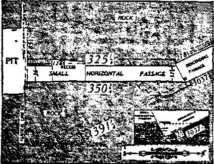
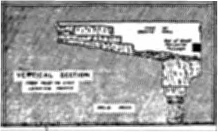
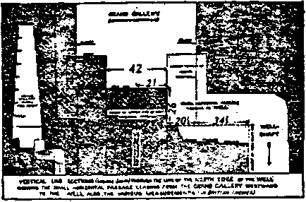
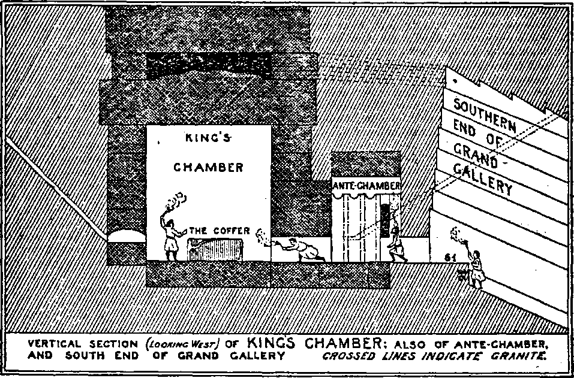
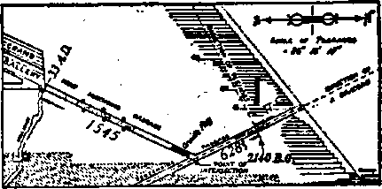
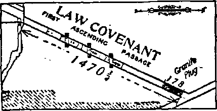
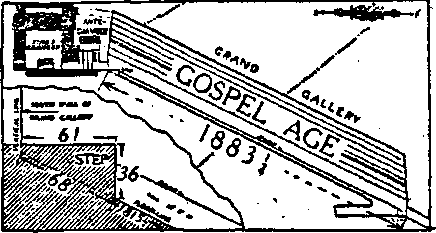
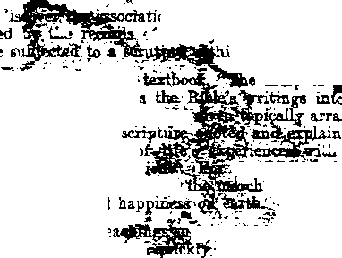

' ' . " 43<hzncb and Invention ;
A Bikes tub ths Scientist (Illustrated) .. . . The Great Pyramid of Gizeh ........
Squaring the Circle, and Measure Standard . . Number of Days In the Solar Year .. . . . Distance from Earth to Sun . *.......
The Pracessioual Cycle......... .
Theology of the Great Pyramid......
Downward Trend of Mankind.......
King’s and Queen’s Chambers.......
, Prophetic Chronology of the Great Pyramid . .
Pyramid Built In a40 B.C. . . .'......
The Jews Left Egypt in 1015 B.C. .....
Christ Returned in 1874 A. D........
1914 A^ D. and 17S9 A. D. Foretold .....
Last Jewish Jubilee Due In 1925 A. D. . • • . Radio Puutuont or Pbqfhxct.....- • .
' Religion and "PHnxMorar
' Trwq Lite otv 1thb Earth «•••♦«, •
’ Christian Church a New Creation No Eternal Life without Obedience ‘ . . ...
Man Living in Abnormal Conditions ■ •
\ Semi-Gaseous State of Saturn * • • • • • • ' Adam Was Driven from Eden......
Earth Itself Not Cursed ........ ts of the Great Deluge ......
g Agencies at Word......
• Influenza Travels tn the Atmosphere . . . . Other Enemies of Humanity ....... Mars Now in Glacial Age .......
Civilization In Throes of Rebirth.....
New Light Flooding Dark Places . . . i . Creative Processes Unfold Slowly.....
Eternal-Life Prospects for Millions Now . . .
Studies nt “Thb Habp or G^o*.......
, 205 f 2ffT ^2LQ. :■ 2u . 211 . 211 . 212 . ar -. 215 . a? . 218 ► . 218 . as . 220 . ?» .222
. 195
. 195
. 195
. 196
.‘1ST . 198
. 198
. 199 . 200
. 200 .
. 201
. 201 . 202 . 202 . 203
. 204
. 223
Published every other Wednesday at 18 Concord Street, Brooklyn, N. I, U.S, A, by WOODWORTH. HUDGINGS A HARTIN
Copertarrs and Proprietor* Address.* it Concord Street, Brooklyn, X F., IT. 8. A. CLAXTON J. WOODWORTH . . . Editor ROBERT J. MARTIN . Bnirin—a Manager WM. F. HTTDGINGS . . Sec* y and Trees.
m Cmrra a Copt—11.00 a Tbab Mau Rbmxteamcu to TRE GOLDEN AGJ Fohsigs Qnicu; Brititfi.....34 Craven Terrace, Lancaster Gate, London W. 3
Cansviurn......... .>8-40 Irwin A renue, Toronto, Ontario
Australasian ....... 496 Collins Street. Melbourne. Australia Reath African • LeUe Street. Cape Town. South Africa
Entered as second-class matter at Brooklyn, N. under the Act of March 3, 1U79
V^nna VI Brodk&w, N.Y., Wednesday, December 31. 1924*.' * JCumbee IM
' ’ . <’^«<*- * - „ *
„ (Bepdnted by Beqaert from Gounr lea Na. 130X ‘ ’
Benjamin Franklin,’ the discoverer of eleo tricity, stated: “The rapid progress of true science occasions my sometimes regretting that I was born so soon. It is impossible to imagine the heights to which may be carried, in a thousand yean, ‘ the power of man over matter. .
“Agriculture may diminish its labor, and double its produce.
“All diseases may, by sure means, be prevented and cured, not excepting that of old age, and our Eves lengthened, at pleasure, even beyond the antediluvian standard.
“Oh, that moral science weip in fair way to improvement, that men would cease to be wolves to one another, and that human beings would at length learn what they now improperly call humanity t” ’
The foregoing statement of Franklin was a prophetic Inspiration based on statements in the Bible and his knowledge of physical phenomena; and we are now near the time of the fulfilment of his forecast, .
Synopsis of Outstanding Facts .
THE following is a presentation of some of the , outstanding facts that prove that present human life is grossly unnatural—abnormal life, due to the unfinished state of the planet on which we live and to other devitalizing influences incident to the creative process now going on:
That man's physical powers, mental faculties, moral perceptions and judgment are either dormant, relatively dead, or so warped by his physical imperfection that he is incapable of sound reasoning and successful government;
That man has formulated the false theory that a selfish scramble for personal comfort, by which the weaker is crowded to the wall by the stronger, is true civilization; and that the government which man has baaed on this false theory now threatens to collapse under the weight of its defects, as the complicated problems of increasing population multiply, and completely to destroy the whole system, falsely called civilization, under an evil spiritual administration;
That this, in the creative process, is merely the working of divine economy, which utilizes all things in attaining its end, perfection; and that when the end of one stage of the process cornea, an advanced stage in the process takes its place; and that we are now at the end of one stage and the beginning of a new one;
IM
That the earth is now nearing completion, and that Ka physical condition nearer perfect is about to produce a human physical condition nearer perfect and in the end absolutely perfect. Perfect—normil—human life, perfect mental faculties, moral perceptions and judgment are due to follow. Heal civilization and a right. eoua government will then prevail, through the tration of divine power, when physical and moral perfection will go band in hand.
Thia presentation is confined mainly to a consideration of man's physical life as distinguished from his mental and moral being.
Christian Church a New Creation
THE theory that man was created to be a spiritual ■ being is not supported by any Biblical statement.
The Christian Church is an order created entirely ? independent of the human race, Ihough aelected^^pm it; hence its name “new creation”. v
The special doctrines of the Christian Church, as presented by Jesus, its founder, have no application to the human race as such, but only to a special few who • are called out to form a new administrative order, a , new creation, entirely distinct from the human creation. Strangely enough, the rationale of the Christian Church has been entirely misunderstood by most people..
A critical examination of Biblical statement shows that the human race was created to remain a human race to all eternity, instead of, as most people believe^ eventually to become spirit beings. ,
No Eternal Life Without Obedience
WHILE it is true that the Bible teaches that mankind cannot have normal life or continued life without recognizing and obeying Christ's commands, yet but very few are accepted as real members at His administrative body, the Christian Church. They . only, with a relatively few other human beings will
• become spirit beings; all others will remain human, with . fleshly bodies as we now see them.
_ There Is no condemnation of such because they would ■ ■' ** not respcpid to the invitation to become members of : the Christian Church. They only min an inconceiv
ably high honor and life on the divine plane; the same in a limited sense as if the President of the United States should offer a citizen a position in his cabinet and ' the citizen declined. He would not lose his rights as a ' private citizen, though he would lose the high honor of being a cabinet officer. He would be obliged to obey ' the laws enforced by the chief executive and the officials of the administration, but no more. If, however, he accepted tile position of cabinet officer and on account of disloyalty to the President was forced to resign, he would be disgraced; and if disloyal to the United States he might be imprisoned or even executed.
That is the position in which there have been billions of nominal church members who did accept the offer of a position in the cabinet of Jesus Christ, the kingdom of heaven, but proved disloyal. No Biblical statement indicates that they will be eternally tormented, ■ but they are liable To become extinct in death "if their offense was wilfully criminal. *
The reason why the rationale of the Christian Church has come to be misunderstood is that nearly* all have erroneously concluded that its special doctrines were binding upon all, whereas they were mandatory only upon those who answered the call, accepting the offer of a position in the administrative body of Jesus Christi Billions answered the call. They wanted the high honor; but very few, however, have fulfilled the conditions. "Every tree that bringeth not forth good fruit is hewn down, and cast into ths fire* Wherefore by their fruits ye shall know them. Not every one that saith unto me, Lord! Lord! shall enter into the kingdom of heaven; but he that doeth the will of my Father.” —Matthew 7:19-21.
Only those who are faithful to Christis teaching, even until and unto death, can have this high honor. The invariable conditions are that they must suffer, as He suffered, contempt, scorn, hatred, ostracism, persecution * and death—if need be, even a violent death—-even burning at the stake, or crucifixion, as He suffered on account of His loyalty to Christian Truth. Jesus said these were th&invariable conditions; and all down the Gospel Age these have been the invariable experience of true Christians because they were loyal.
Most of the members of the great, popular fashionable Christian churches have answered the call, but would not phy the price, would not fulfil the conditions. They have been disloyal nominal Christians, “tares” dominating these Christian church systems; and the loyal Christians were obliged to Hee out of them, and were persecuted and tortured for doing so. The proa cess still continues.
These so-called Christian church systems either
joined with, became a part of, unchristian governments . or, indirectly backing up and supporting them, have en- > dorsed and helped to support the lust for empire and wars of these unchristian governments, killing millions of people, this grossly disobeying the teachings ci -Christ <* .
These gr&tiso-called Christian church systems could ; have entirely prevented these wara^ had they been ready • to suffer unto death rather than violate Christian prm* * ciple and engage in war. But in most cases they have ” even been prominent, through their clergy, in ™ airing the wars popular and in urging the people to war. j
A final analysis of Biblical statement and a study of the signs of the times, as forecast by Jesus, show that ! the new creation, the true Christian Church, is now -about complete and that the time has come for the new administration of Jesus Christ to take office. The kingdom of heaven is being instituted, and the preparatory work of cleaning away the old evil administration of human affairs, including nominal Christian organize-tions, “cast into the fire,” is now going on. ■ • _
The prevailing idea is that the kingdom of heaven is a far-off, mysterious something that has nothing to do with the practical human affairs. Whereas it is clearly shown, when we critically analyze Biblical statement, that it has ail to do with practical human affairs; that its first work is to restore and help the human race back to that perfection lost by Adam; that mankind ’ are to have eternal life right here on earth as indicated in our Lord’s prayer: “Thy kingdom come. Thy will be done on earth as it is in heaven.” '
Let us now proceed to examine what God’s will is on earth regarding the human race , and the physical . conditions on which it depends for its life, as indicated by the laws that govern the physical world.
ANY student of the rocks, strata, and fossils of the
. earth knows that it has been for long ages, and continues to be, in the process of creation; that it is not quite complete, though nearing completion, being now nearly at the end of the ice age and at the begin-, ning of the final stage of completion. Under the incomplete conditions that have prevailed, normal life has been impossible. This must be self-evident to all who study and reason upon the matter; for to attain to perfect vegetable and animal, including human, physical life, perfect physical conditions must prevail.
Have we any standard by which to compare? If not, how can we arrive at a reliable conclusion as to what a perfect earth is? Who has ever seen a perfect earth ? .
Geologists know that there was a time when neither vegetable nor animal life was possible upon the earth, and that the earth’s development can be traced up to the time when it was possible for vegetable and animal
; - Dw»a«« M. u»4 * n. QOLDEN AQE m ’
Life to exist upon the globe, also Its development by stages up to its present condition. And by physical law, which governs all material life and matter, we can determine the final stage of its completion, the approximate time when it will be complete, and the effect of that completion on vegetable and animal life, including human life. ’
For instance, we know that in the arctic regions, where there is a vast area covered with ice all the year around, * there was once tropical vegetation upon which animals fed that were larger than any now living, and that there are coal seams in the polar regions that ages ago could have been laid down only from great forests of vegetation. This proves that in the process of earth’s creation, there has been a period when part of it has been as perfect as it all will be when completed.
This proves also that the plan or process of planetary Creation involves long periods of seeming reaction or retrogression, followed in turn by long periods again of still further advancement nearer perfection. This seems to be the law of planetary creation—now advancing, now retreating and then advancing again; and all life upon the earth has followed this creative law. In fact, it seems to be a law of dll creation so far, whether physical or spiritual, animate or inanimate.
The ice-caps in the polar regions not only determine the conditions of all vegetable and animal life there, but are literal refrigerators of the whole earth, keeping life upon it in a semi-dormant, refrigerated condition in which there has been no substantial progress since the deluge which resulted in the glacial age, excepting the alight improvement, relatively speaking, by the decrease of the ice area in the arctic regions, as the ice has slowly subsided.
The cause of this recurring action and reaction is clearly understood by those collative students who study the deductions of specialists in astronomy, geology and biology.
Astronomers agree that the other planets in our solar system, taken in connection with what geologists find in the earth, illustrate in their various stages of completion the law by which all planets are formed. So we do have a sample by which to make comparisons, and we know the various stages and conditions that this earth has passed through and the cause of its retrogression, the condition when life became possible, and ita general history down to the time when human historic record began to give us the details and when a portion of the earth was perfect. ■
Excepting the record of the planets we see and the record in epxth strata and fossils, the Bible is the earliest record we have; and while some scholars, including most modern theologians, do not accept it as authority in physical science Kant, the greatest authority of modern scholars in philosophy and physical science, and Virchow, the father of modern pathology, and many other first-rank scholars in physical science do accept its authority as final, of course rejecting tha known interpolations.
Every planet in its molten stage throws.off gaseous vapors of various weight and density. Held off by the great heat of the core these gain, by friction with its envelop, a revolution of their own. The lightest gas, hydrogen, rises highest or farthest' from the me in body; nitrogen and oxygen next; and so on. As the planet cools, its rings fall gradually to it, the oxygen and hydrogen last Some special features may be peculiar to each planet, but this feature must prevail in all that belongs to the planetary class.
THE planet at first may be but a body of gas gradually obeying the law of cohesion and friction, gradually solidifying to a liquid molten* mass through long periods of times.
Saturn, for instance, is only one-eighth the weight per volume of the earth, and must be semi-gaseous. Its ring, or combination of rings, is shaped like a wheel about the planet, 172,600 miles in diameter, extending 48.065 miles on each side of it, which is the hub around which the ring revolves; and this ring just outside the planet is 2,000 miles thick. The ring or wheel always
revolves in the same plane as does the planet, and always faces the sun. When seen edgewise it looks like A, and when seen partly sidewise like B. Hence all planets, while in their ring stage, are in thick darkness at their equator, the darkness covering a belt 2,000 miles wide, more or less, according to the size of the planet. God, speaking to Job (38:4,9), accurately describes it: “Where west thou when I laid the foundations of the earth ?... when I made the cloud the garment thereof and thick darkness a swaddling band for it?"
That was thousands of years before any telescopes were made, or any human being could know by observation that planets have rings.
Aa neither vegetable nor animal life could exist in a wide area of constant, thick darkness, there could be no life on a belt 2,000 miles wide on a planet the size of Saturn, while in its ring stage. But outride of that belt of thick darkness, after the planet had cooled, normal sunlight and vital physical conditions would be perfect, until the ring began to collapse, and for thousands of years gradually spread out toward the poles.
Before the ring spread entirely to the poles, there must have prevailed in the north a physical cccditivn perfect beyond anything man has since known. We know thia to be so; for vegetation grew with astonishing vigor. Mammoths larger than elephants are found in the arctic ice with semi-tropical plants undigested in their stomachs.
The physical conditions in the far north must hare been ideal before the ring of Tapor spread out over it and shut out the sunlight. For hundreds of years it must have been the only spot on earth which had the clear light of the sun every day in the year and its vitalizing, oxygenizing rays for the development of perfect physical life and the perfect fruits and vegetables to sustain that life.
The human race has never since known any condition approaching that ideal which is accurately described in Genesis 3: 8, 9: ‘/And the Lobo God planted a garden eastward in Eden; and there he put the man whom he had formed; and out of the ground made the Lord God to grow every tree that is pleasant to the eighty end good for food; the tree of life also in the midst of the garden, and the tree of knowledge of good and evil”
Never any thing like this since I Burbank, however, is beginning to produce marvels, but not up to that quality. _
Even under the devitalizing condition that prevails, various herbs, vegetables and fruits have their peculiar distinctive effect upon those who partake of them. The thirty-second solution of the decoction of a certain herb will throw a person into spasms, and the thirty-second solution of the decoction of another herb will recover that person from the spasm.
We will later further explain why the physical condition on the earth changed, so that never since could such perfection prevail; but we will later clearly demonstrate that we are again nearing physical conditions when that perfection will prevail, not temporarily as then but permanently, in the near future when the Northern Hemisphere will be completed.
ADAM disobeyed; and God drove him out of the gar. den lest he eat pf the tree of life and live forever (in disobedience). Neither eternal life nor eternal torment for man is shown here. It was real kindness to drive Adam away from that eternal life-giving food. Though the penalty for disobedience was death, God bad a most amazing plan for restitution of Adam and his posterity to life, through the crucifixion of His only begotten, belov^l Son Jesus, a ransom of all mankind from the grave—an. object lesson to all eternity to all creation of the sublime love of the Father and the^Son for the human race, a love higher than any created being could conceive.
God’s love and mercy had a doubts feature. He clearly designed to people the planets with happy, independant, free moral agents, and not automatic machines; and Adam and bls posterity were put through a creative process, an experience, that would make them not only lovingly loyal but intelligently obedient, yet free moral agents. "And the Lord God said, Behold^ the man is become as one of us, to know good and evil: and now, lest he put forth his hand, and take also of the tree of life, and eat, and live for ever: therefore the Lord God sent him forth from the garden of Eden, to till the ground from whence he was taken.*
Thia Edenic physical paradise—a perfect physical condition where for hundreds of years in the constant life-giving sunlight eternal life-giving fruits had come to perfect maturity—soon was overspread by the thick cloud of vapor from the ring of mixed hydrogen and oxygen shutting out the sun, and eventually the garden was wholly obliterated by vast deposits of snow that settled into glacial ica. Conditions on the earth now gradually became reversed. The ring in settling down, and spreading out had become thinner Both sun and moon could be dimly seen through the veil of vapor over the equatorial regions, and the climatic conditions toward the equator became more favorablefor vegetable and animal life than the regions in the north, where for half the year the indirect rays of the sun and-the thick cloud resulted in a twilight condition, and vegetable and animal life began to lose their perfection.
The accompanying illustration shows the earth before the ring had spread entirely over it. The conditions into which Adam and Eve were now driven had never been- pro* ductive, but entirely dark and barren for long ages. Now, however, by the light like that in a dense forest or on a cloudy day, vegetation began to appear; but men were obliged to work diligently to get a living. This is accurately showp in Genesis 3:17-19. "Cursed is the ground for thy sake. Thorns and thistles shall it bring forth to thee, and thou shalt eat the herb of the field: in the sweat of thy face shalt thou eat bread.* That has been the experience of the human race in general, ever' since; in fact, sometimes even worse.
0 NOT misconstrue the statement that the ground was cursed—disfavored—for Adam and
Eve’s sake. The earth was created especially for the human race, and the whole of its creative process was arranged to suit their creative process, their instruction, testing, training and disciplining to be -free moral agents, every man a miniature king (in the earth) patterned after the great Ruler of the universe.
"The heaven, even the heavens^ are the Lord’s: but the earth hath he given to the children of mem*—Psalm 115:16.
The Lord timed the creation of Adam when the1 reactionary physical changes on the incompleted planer, would devitalize him, causing his death, eventually. In that sense, for his sake the ground was cursed, was made unfavorable. .
. This pro-arrangement, specially ordered in Adam's ease, was a part of the great creative plan relatively Just now beginning to be put into operation, of which the creation of the planets for the special abode of the new, unique species—man—is a contributing feature; and man's fall, its cause and its remedy demonstrate the infinite foresight in every minute detail of the divine mind in preparing an effective object lesson for the instruction, in loyalty and obedience, of human beings yet to be created on the billions of planets. We may be sure that by wireless they will converse from planet to planet, rehearse the wondrous story.
The timing of Adam's creation just when the spreading of the ring of vapor to the far north over the garden of Eden fulfilled the Loan's mandate driving Adam out of the garden, forced him on account of the darkness to migrate toward the equator, where it was sufficiently light, but relatively barren and unproductive of normal life-supporting food.
A surprise is in store for mankind—the beginning of the restoration of Edenic conditions and the resurrection of Adam and all of his race. Burbank's discoveries are only a slight hint of what is coming in life-giving fruits and vegetables. Thia we will demonstrate conclusively further on.
The Light shining through the cloud-ring had permitted a growth similar to that in a dense forest, where some light penetrates, but not enough to permit fruits and vegetables to mature. Hence we see by the foregoing narrative in Genesis that Adam and Eve were obliged to scratch very hard for a living—quite a humiliating change for them. They were not in a dense forest, but on semi-barren land. This fully accords with the known physical facta.
Remits of the Great Deluge
ATINQ from the time when the ring spread and settled over all the earth, the first stage in the reactionary period lasted 1,656 years; during this stage the vital conditions were such that man lived nearly 1,000 yeats notwithstanding the poor food and lack of clear, vitalizing sunlight. The second stage of the entire reactionary period of 6,000 years began with the complete collapse to the earth of the ring in a cloudburst of snow. This, south of the 42nd parallel in the Northern Hemisphere, and north of the 42nd parallel in the Southern Hemisphere, melted by the heat of the sun as it fell, or soon after it fell, causing the deluge and the glacial ice-caps in the polar regions. The ice-caps, though ever since.slowly subsiding, covered at first approximately 11,000,000 square miles of the earth’s land
surface, but now subsided to approximately 7,000,000 square miles, all but about 700,000 of which an on the antarctic continent. •
The area of ice in the arctic regions is diminishing rapidly; and when it is all gons ths Northern Hemisphere will be completed. Then, for the first time in 6,000 years, reaction will cease, and advance will again begin, a gradual but permanent return to the physical conditions in the garden of Eden all ov^r the earth instead of in one spot. ,
The second and final stage of the 4,344 yean of ths 6,000 year period of reaction was accompanied with far greater destruction than the first stage, notwithstanding the fact that the fall of ths ring had permitted the clear light of the sun to vitalize all life on the whole earth more than ever before, except on a narrow belt in the north. . *
The vast ice-fields immediately placed every thing on earth in cold storage. All of New England and to the north pole and most of Europe to the north pole were covered with ice hundreds of feet thick. All vegetable and animal life near the ice was devitalized almost to the point of extinction, retaining only a bars sxu-tence, practically a hibernating state of all vegetable and animal life, stupified and benumbed by a grossly abnormal condition on the planet. Normal life has been * impossible; and what we have known as life has been but a faint conception, a nightmare, in comparison with normal life.
On the North American continent, the belt of greatest vitality waa in Guatemala, 1,500 miles south of Boston; but the changes were so sudden and extreme that everything was stunted. When the north wind blew from the vast expanse of ice in the north, everything was ' chilled through, if not frosted, as far south as Central America; and when the south wind blew from ths equator, relatively near, everything wilted with heat. •
The changes must have been so sudden and extreme that only the strongest could endure. This accounts for the cave dwellers in Europe. Caves were the ideal residences then; for in them the extremes of sudden change were modified. Somewhat similar meteorological conditions still prevail, but we have become inured to them, and they grow less extreme as the area of ice ‘
Nine-tenths of the area of the ice in the arctic region have subsided; and when nine-tenths of the ice in the refrigerator have gone, the remainder goes quickly. It is not normal for ice to form or to remain on the planet, except on the loftiest mountains. This is demonstrated by the fact that it is steadily subsiding as normal conditions slowly assert themselves.
There Is scarcely any human record of the period just subsequent to maximum glaciation—only a brief reference in the Bible, and a few rude sketches in the caves.
Except near the equator human beings were so benumbed that all they could think of, or do, was to get
TU
* barely food enough to keep life within them. They degenerated like the wild animals. Vegetables and fruits’ of the temperate zone must have become nearly extinct The caves indicate the desperate struggle for a -bare existence. There the debris of animals, bones and rubbish of fossils collected in successive layers without being cleared out Evidently at that time mankind lived in part on. the frozen carcasses of the animals that were ejected from the terminal moraines of the glaciers.
UNDER the extremely devitalizing change brought about by the Deluge and its sequence, the glacial age, in the close of which we are now living, human life was shortened from nearly one thousand years to less than one hundred years. But in addition to the vast devitalizing ice-fields, another devitalizing agent began to operate just after the Deluge, and in the regions free from ice brought upon mankind all kinds of germ diseases, which did not prevail in the antediluvian age. Colds, catarrh, tuberculosis, fevers, diphtheria, smallpox, cancer and scores of other germ diseases appeared, attariring man and the vegetables and fruits upon which he subsisted.
All these diseases are the agents of death, fermentation and putrefaction that have possibly been spread from decaying vegetable and animal matter, and have fouled the atmosphere with a new devitalizing agent since the Deluge—nitrogen gas.
The unburied bodies of trillions of land fowl, animals and men that perished at that time, I think, without a doubt filled the atmosphere with a greater proportioirOf thia gas, a new element originating from decaying animal matter since the earth became filled with animals and men that have expired. This gas apparently first began to accumulate to any injurious degree just after the Deluge. Its enormous increase in volume ever since, through the decay of dead animals and men, has loaded the air with a non-life-supporting, if not a positively disease-carrying medium, the result of a vicious round of birth and death, ever spreading death to food-bearing vegetation for man and animals and to animals and men, reducing by nearly eight-tenths the relative volume of oxygen, the agent in the air which, breathed into the lung?, purifies the blood. Thia superabundance of nitrogen thus reduces the power of men and animals to throw off disease.
Whether this gas is the direct medium of conveyance of disease gdrms is not fully determined. Seme kinds of bacteria -thrive in nitrogen gag, and other kinds thrive in oxygen gas. We might infer from thia that as oxygen purifies the blood, bacteria in oxygen destroy bacteria in nitrogen. I consulted the Dean of the Harvard Medical School on this subject, who said that it was not yet determined whether nitrogen gaa is the medium of the conveyance of disease germa.
Even when animal matter is buried in the ground, however deep, most of it turns to nitrogen gaa and escapes through the earth into the atmosphere. Hence thia new cumulative element) since death of animals and men began, has come to be the great factor of death; and its removal is a vital necessity to the preservation of life. ' .
HE recent influenza plague all over the world must have had a cause that was conveyed in the atmosphere; and it is logical to conclude that it wu the result of the great number of animals and men left dead and unburied during the war.
In old, thickly settled countries most of the physical, life-giving element in the soil has, by constant cropping, been drawn from it .
Countless trillions of insects, birds, animals and mankind, as before stated, have matured from earth’s products and have died, decayed and mostly evaporated into nitrogen gas, a vast volume of which has accumulated in the atmosphere as the ages have passed. Ik is the . very essence, the extract, of the vital substance or quality of animal matter extracted from' the earth and stored in the air. As before stated, we all know that these vital elements have in some places been drained-so completely from the soil that it is worn out and will not produce food for man or beast. Hence another factor tends to shorten human life—diminishing nutriment in food products.
If this process of birth and growth and death and decay—the constant extracting of the vital element from the earth, and through vegetable and fruit and food production the transferring of it to insects, birds, animal^ and mankind, and at their death the transferring of it to the atmosphere in the shape of nitrogen gas—continued, it would be only a question of time, with increase of population, until all life-giving quality for food for birds, animals, and men would be extracted from the earth, and man-would become extinct through lack of nourishing, life-giving food and because of an ever decreasing percentage of oxygen taken into his lungs, to purify his blood. Any one must see that this would be inevitable; for the factors of extinction would work from both the air and the soil.
We are now at a culminating point similar to the Deluge. Under the confusion caused by the World War and the breakup of orderly economic conditions, the lack of industrial occupation and remuneration for the masses, great social and political excitement will for some time still further increase the death rate, a vicious round of birth, death and decay. .
The time has come when some fundamental change and remedy is imperative, if the human race is to survive. I will later show the remedy.
TILL another factor of demoralization, distress and death, the most perplexing and aggravating
of aH» has for 6,000 years contributed to make man's life a living death—Satan and hia angels.
We are all more, or less familiar with their history; but because they cannot be seen with the physical eye. most people doubt their existence. But judged by the _■ devilish things some people do, it is self-evident that an unseen influence ia putting them up to do things that an average horse, dog,- or pig, or even a monkey, would be ashamed to do. Instead of evolnting they have devoluted.
Evil spirits work by constant suggestion on the human mind, and a constant dropping of water will wear away even a stone.
Jesus said that Satan was the prince (ruler) of this world, this age—this social, political, economic and re-- ligious world.
The thought no doubt enters your mind, “if all \ thia is true why did God create man before the earth was completed and oblige him to undergo such terrible hardships and live an unnatural, abnormal life, tempted and fooled by an unseen devil? Surely that does not look like wisdom, love, justice or mercy."
U you understood God's plan you would see the marvelous wisdom and love of all this, and its justice and mercy also.
The Divine Mind knows perfectly the law of cause and effect; for He created all things to operate by that law. He saw the whole process from beginning to end before He created the world. <fKnown unto God are all hia works from the beginning of the world." (Acta 15:18) As before stated, and it is well worth repeating, God wanted free moral agents, beings, angels and men, that would not be mere automatic machines, but beings that would of their own volition do the right thing. Only training, and experience would create such characters. Evidently there was no precedent that could be used as an object lesson.
God foresaw that Lucifer—“Morning Star"—the great angel who had been put in charge over man, would become ambitious, conceited, and would plan to a kingdom all his own, making Adam and Eve and their descendants his servants. They had no experience. Lucifer, how named Satan, was more subtle and powerful than they; moreover, he was invisible to them, and could, and can still, control men unless they are on the watch and resist him. But as most people do not believe that tjiere is any such being they cannot be on the watch for him, and so are easily misled.
OD, knowing what Satan and Adam and Eve would do, created Adam and Eve in that rela
tively short period of time, between the stages of the earth's development when the conditions on a small part of it were normal—complete—perfect Otherwise Adam could not have known what he' lost, by disobedience ; his experience would not have been perfect A> soon aa Adam disobeyed, the Creator drove him out of the completed spot, where the fruit of .the orchards was perfect, and would sustain Hfe as long as he ate of it; and the next stage in the creation of the earth followed, with its devitalizing reaction, which carried out the sentence of death on Adam and Eve and their posterity.
But God's plan then was, and is now, to restore Adam and all of hia posterity to Hfe, giving them their first chance, after having had experience and a fair trial under perfect conditions with no invisible devil to tempt them. Then if they disobey, having had experience and an'object lesson, they will be annihilated in the second death. The proof of thia is given later.
Jesus said that the hour ia coming when all that are in the graves shall come forth. (John 5:28) The atmosphere n filled with nitrogen, from which their bodies can be instantly created; for this gas is the essence of animal matter.
Here on this planet, we may assume, is the first peopling of a planet, and all of this story of man's fall and recovery.' The dreadful consequences of disobedience will be an object lesson to all eternity, * lesson so vivid and impressive to .the people hereafter to be created, and to angels also, that no mom will there be disobedience.
Furthermore, the amazing love shown by the Father and the Son in all this transaction will prevent any desire to disobey or any ambition to rule except by divine direction. We do not know, but reason would conclude that no otljer planet will be peopled until the object lesson ia fully completed.
HE planet Mars is in its glacial age, as its polar ice-caps are plainly visible; and we may assume
that it will be the next planet to be peopled, when its ice-caps are all melted. There is scarcely any question but that, when it is peopled, conversation between Mars and this earth will, by wireless, readily take place.
We may assume that every solar system has, or will have, as many planets as our solar system; and as' three billion suns have been counted, there will be twenty or more billion planets to be peopled.
Is there any doubt whatever that, under the terrible physical conditions which have prevailed and in which man as well as all animal and vegetable life has existed in a benumbed state—barely clinging to life for a few years—thia life is grossly abnormal, a mere fraction of what it will be in length, vigor and perfection, when all these devitalizing conditions have passed away and for the first time the entire earth will be complete and perfect?
Daring this long period of 6,000 years the creative process on earth has rendered conditions terrible by comparison and literally almost beyond man's strength to endure. This surely was bad enough; but Satan has made it still more of a hell, a living death, to the mass of people.
As we look back, the picture is very dark, and bids fair to be darker still; and if we did not know that just ahead of us the dark night of sin, sorrow, death and destruction is to give place to the glorious light of the new day, we might well tremble with fear.
No doubt the next few years, the climax of anarchy, the disintegrating of the present social, political, economic, and religious world we have known, will be the greatest time of trouble ever seen. Jesus, forecasting it, said (Matthew 24:22): “Except those days should be shortened, there should no flesh be saved."
IN A letter to ine from the editor of the Literary Digest, which I have quoted in another article, but which is so pertinent that it will bear repeating in this connection, he said: “Civilization is in the awful throes of a rebirth^ and this stupendous upheaval will in all probability change your life and the life of every living man and woman about you."
As before stated, Jesus , (referring to the present time) said that Satan was the prince (the ruler) of this world. He said (John 12:31): “Now is the judgment of this world: now shall the prince [Satan] of this world be cast out"; and the present condition <rf wars, contention, destruction, crime and misery is the dimax of the trouble engendered in casting him out.
Satan's rule at best has been devilish. Who has been satisfied with it? Possibly a few of the favored ones. Who wants to perpetuate that rule? No doubt in the next few years the disturbance and confusion incident to the wori^ of casting him out will be awfully distressing. But cheer up! It is always darkest just before day.
What is the process of casting Satan out ? He is like his dupes—give him plenty of rope and he will bang himself. He has made an awful mess of things, and all that is needed is to turn on the light and let men see the’mess. Jesus explained the process (Matthew 12:26): “If Satan cast out Satan, he is divided against himself; how ;hen shall his kingdom stand?"
The destructive quality of hate, the logical sequence of selfishness, the predominating feature of Satan's character, as $howu by his ambition to have a kingdom all his own, separate from God's kingdom, has hypnotized all Satan's dupes. This selfish desire, this lust for world empire, culminated in the World War.
The Kaiser and the English imperialists fought for world dominion and dragged all the world into the fight. All the nations had their own little selfish plans. Satan's kingdom is tearing itself down. Cohesion is gone, incipient anarchy prevails.
A great light, as at the first advent of our Lord, is shining in the darknesa Like lightning it if flashing* and still more like the early light of a new day it steadily dawns. Only a few, however, recognize its source. This light is showing up Satan's lies, his character, and the character of his dupes. They are spiritually blind; they cannot see this light. "And the light shineth in- darkness; and the darkness comprehended it not."—John 1:5.
Satan and his dupes do not realize that this light is showing them up in their true colors. “And then shall that Wicked [one] be revealed whom the Lord “ shall consume with the spirit erf his mouth, and shall destroy with the brightness of his coming."—2 Thes-saloniana 2:8.
MEN have not realized the astounding import of the light which during the past forty-five years has shone into the minds of meh like Russell, Edison, Marconi and thousands of others in religious truth, electrical science, physical science, sociology, economics, chemistry, world politics, eta.
Satan and his dupes have been taken by surprise. Satan has chuckled, saying to himself, “I can use these miracles to strengthen my kingdom." The selfish profiteer chuckles: “I can make millions, aye billions, out of these miracles." But the light has kept on. shin- ' ing, flooding all the dark places in men's minds.
Gradually the fog of ignorance and superstition is lifting. Men have been inspired to read, study and think for themselves as never before. Men cannot so readily be held in slavery. The benumbing effect of the ice age is yielding—the physical and the spiritual go hand in band. '
Sanitary conditions are improving, medical and surgical skill also. Satan is gradually coming to the conclusion that something unusual is threatening his kingdom—he has been taken by surprise. Thief-like, the Light has come into his house, his kingdom. He hates the light; he is the great imperialist; he wants his dupes, except a few whom he has made his cabinet officials, to be kept in ignorance, especially the masses— his slaves. But the light keeps on flooding the dark places.
Satan tries to control all the newspapers and fill them with lies; but the people see the trick, start new papers and write new books. He corners the print paper, and so the light goes on, and the fight also. He might as well try to keep back the ocean tide with a broom. -
Imperial Satan, the imp, riding on the backs of the people and for 6,000 years, vampire-like, sucking the
life of mankind; the ring about the earth, that devitalized mankind fbr 1,656 years and finally drowned all but Noah and his family; the ice-cape which nearly finished man again^ putting him into cold storage-all are either gone or at the point of going.
BUT what about the vast deposit of nitrogen gas in the atmosphere^ that threatens to annihilate the human race, after having survived all these catv dysms? The great light now shining in men’s minds also is equal to this new menace. Divine economy is always equal to the necessity; and this menace, this devitalizing agent, nitrogen in the air, is the richest fertilizer known and is being transformed from a menace into the greatest temporal blessing, reinvigorating, vitalizing and restoring man to the perfect physical condition that existed in the garden of Eden—a completed planet, the first one, as far as we know, to be finished and peopled in all the universe; in reality the real beginning of creation now. -
This ia no dream of fancy—no figure of speech. It is a literal, self-evident factj an amazing reality. Through the extraction of this nitrogen from the atmosphere and its distribution in Hie soil, every acre of land, even the sandy desert of Sahara, irrigated, can be.made to blossom aa the rose literally, producing fruits and food morq vitalizing and life-sustaining for vegetation and far man than was ever dreamed of even by Burbank, the wizard in agriculture, as Edison is the wizard in electrical science.
Edison says that we are only an the threshold of the development of electrical science. This new light that is coming into men's minds is sure to destroy completely all selfish monopolies, including that of verbal communication. The United States Government is already preparing a plan for wireless rommunirAtinn on the postal system plan, that will for a few cents be accessible to alL
This new light that is shining into men’s mi-nHa has shown them, and is continuing to show them, new laws that govern matter, so that new inventions are multiplying that rival the greatest miracles ever performed. Nothing seems impossible any longer. One of the latest inventions reported is the helicopter, an airplane that rises or descends vertically, can mount to a great height in a few seconds, is not affected by wind or weather, *and is capable of standing still in the air.
For instance, as reported, it will be possible at Boston to go above’’’the friction of the envelop of the earth as it rolls around at the rate of 1,000 miles an hour, remain stationary and in twelve hours come down in China, take supper and, after a good night’s sleep above the clouds, take breakfast the next morning in Boston. This seems impossible, all this long-distance travel with very little expenditure of motive power; but stranger things axe being done. Railroads, trolleys, and autos will be old junk. Also the evil system, "Satan's kingdom,” misnamed "Christendom/* "Christian Civiliiar tion" (so-called) will be "old junk*\
THROUGH thia same great light cornea another discovery of fabulous qualities of energy. Rv * dium has been found.
Those who have experimented with radium claim that it prolongs the life of the fruit-fly, which is very brief, to 700 times its normal length. If it has the same effect on mankind, even under present condition^ it would prolong the lives of some persons 43,000 years and some even 70,000 years,
* To return to the consideration of nitrogen gas: Its pressure in the atmosphere is plus 11% pounds to the square inch, its volume has increased to 7.9 percent of the atmosphere and to 77 percent of its weight; it is incapable of supporting life, hence it is dead air in the lungs. Over every acre of the earth’s surface there are 33,830 gross tons of this gas. It is only slightly soluble in water; hence heavy rains do not dear it from the atmosphere.
As before stated, from a devitalizing element in the air that threatens the destruction of the human race, nitrogen is being transformed into the most invigorating, life-sustaining element through stimulation of vegetable growth, that man has ever found, restoring him to the physical perfection that was available in the garden erf Eden through the medium of perfect fruits and grains, matured, of eternal life-giving quality. How wonderful is divine economy I One hundred thousand tons of thia nitrogen is available for every acre of land; and it being the very essence, the extract of animal matter, the fifty billions of human beings that have died could be created out of it, besides the soil being reinvigorated for their support.
ERETOFORE, the expense of extracting nitro gen from the air for commercial fertilizer has been prohibitive. But a new invention has overcome the difficulty, and a plant in Germany is- successfully operating with a force of 8,000 men. A plant is now operating in Sweden, and the United States Government is building one costing millions.
It is not reasonable to expect that eternal life-giving fruit will mature and eternal-life physical conditions will prevail immediately. All things follow natural law.
In creative perfection we see that divine economy admits no mushroom growth. All lasting quality is of slow development. The century plant blooms only once in a long period of time! Slowly, slowly, the creative processes unfold.
Aa the earth and all creation respond to the divine
will sad the divine purpose, we enter the new epoch in the divine plan with slow and steady motion, responding to the new order.
' When restitution to Edema conditions commences, or we might say that when earth becomes one great Edenic paradise, aa was first contemplated, human life we must conclude, will be prolonged through the natural agencies before mentioned. This is self-evident.
It requires a thousand years for the mighty Sequoia tree to mature, and we may be sure that the tree of life (the perfect work of the' Christ) that bears eternal life-giving fruit will require that length of time to mature and bear fruit (Possibly by the end of the Millennium a food will have been discovered which will perfectly meet the needs of the human body, and so, with God’s blessing, sustain life forever.
While the Northern Hemisphere of the earth is nearing the completion that is to follow the entire disappearance of the ice from the arctic regions, six or more million square miles of ice still remain on the antarctic continent. While its effect will be negligible in the Northern Hemisphere on account of its being isolated by such a wide expanse of water and the warm temperature of the equatorial waters,*yet it must have some effect on vital conditions here.
The extremely low temperature there is moderating, but we may expect that the ice may still persist for perhaps a thousand years more in the Southern Hemisphere.
Human life lasted in the antediluvian age for nearly 1,000 years; and in the completion of earth to Edenic conditions first contemplated we can readily see that aa we gradually near perfection of physical conditions, all other conditions of life will correspond and, as Benjamin Franklin predicted, man’s life will extend a thousand years.
UNDER the conditions of life in the past, the vicious and the incorrigible did not live out half of their allotted time. This law of cause and effect will of course continue to operate, if no other law cuts off their life.
But there is to be no more cloud-ring or deluge or ice. Steady advance toward perfection is now the order.
The vicious and the incorrigible will die out quickly.
Jesus said of the time now nearly due that there would be no more marriages, no more bearing of children. He said that people would be as the angels in that respect, but He did not say that men and women would be spirit beings like the angels.—Matthew 22: 3<V
It is a logical conclusion that after 1,000 years have expired, under perfect normal physical conditions, the vicious, the wicked and the incorrigible will all be extinct and out of the way. The righteous will then live forever. Men and women, and all physical condition^ will be perfect—normal
According to the record we have of the length of human life before the Deluge, even under the imperfect . physical conditions, where the sunlight did not have its full invigorating effect, men lived almost 1,000 years. But now under the more perfect physical conditions which will ensue after the ice is all gone from the arctic region—and we may reasonably expect it within fifty years if not before; after the volume of nitrogen in the air be diminished, giving a greater percentage of oxygen in the lungs to purify the blood, and the nitro-. gen restored to the soil to stimulate its virgin quality of animal life-giving food, great increase of medical knowledge and skill, the application of radium and other life-prolonging agencies, mankind with increasing purity of thought, word and action will live forever— the normal life of man. So we may logically say that millions now living will never die.
"And I saw a new heaven [a new religious condition] and a new earth [a new social, political and eo '• onomio condition]: for the first heaven and the first earth had passed away.”
"Behold, the tabernacle of God is with men, and he will dwell with them, and they shall be his people, and God himself shall be with them, and be theix God. And God shall wipe away all tears from theix eyes; and there shall be ho more death, ... for the former things are passed away...
"Behold, I make all things new.” "But the fearful, and unbelieving, and the abominable, and murderers, and whoremongers, and sorcerers, and idolaters, and all liars, shall have their part in the lake which burneth with fire and brimstone: which is the second death [extinction].”—Revelation 21:1,3-5,8.
“Oh, scenes surpassing fable, and yet true!
Scenes of accomplished bliss, which who can see, Though out In distant prospect, and not feel His soul’Refreshed with foretaste of the Joy? Riven of gladness water all the Earth, And clothe all climes with beauty. The reproach Of barrenness Is past. The fruitful field Laughs with abundance; and the land, once lean, • Or fertile only in Its own disgrace, Exalts to see Its thistly curse repealed.
“All creatures worship man, and an mankind One Lord. one Father. Error has no place: That creeping pestilence Is driven away;
The breath of heaven has chased it. In man's heart No passion touches a discordant string;
But aU is harmony and love. Disease
Is not; the pure and uncontaminate blood Holds its due course, nor feqrs the frost of age. One song employs all nations; and all cry: 'Worthy the Lamb, for He was slain for us.**
[Bariied, and reprinted frea
TH Gouxv Aos Ne. 122.]
S THU mouth of two or three witnesses shall I every. word be established," wrote the apostle Paul to the Corinthian Church.—2 Corinthians 13: L /’ Many at present are disposed to reject the Bible, eUrming- that there are no evidences that it is of divine origin. They have convinced themselves and some others that it is merely a collection of old fables and traditions, compiled in the early dawn of intelligence; and that therefore it has nothing to attract or interest the so-called advanced wisdom of our day.
Recent archeological discoveries have thrown much light upon heretofore obscure passages and stimulated renewed study in the historical portions of the Bible. Modern scientific inventions and mechanical devices are demonstrating th^ truth of the visions of the prophets of old. The automobiles and steam trains are easily recognized as the “chariots [which] shall rage in the streets,... shall justle one against another in the broad ways,... shall seem like torches,... shall run like the lightnings,.. . in the day of his preparation,” which the prophet Nahum (2:3,4) saw in vision.
The physical facts of the radio demonstrations are as miracles before our eyes. If man can so utilize the powers of nature that he can hear the heart-beat of another-1,200 miles away, should it seem an incredible thing that God, who ordered all these laws of nature, could, hear the prayers of His children, even though presented in the secret of the closet? (Matthew 6: 6) The big fish caught off the east coast of Florida in 1917, with a blackfish weighing 1,500 pounds, another fish weighing 400 pounds, and about 500 pounds of coral in its stomach, proves that the experience recorded of Jonah is not impossible.—Matthew 12:40. .
It will be interesting news to many to learn that the Bible, with which we are familiar, is in reality the second witness that gives ample evidence of being inspired by divine wisdom. Jehovah is now bringing to light the first witness to Ilia divine foreknowledge and His interest in the affairs of men. When Moses led the children of Israel from Egypt, he was but pantomiming one of the features of a plan which God had decided upon, the specifications of which had been drawn, sealed and filed away more than five hundred years previous. Moses himself declared that he but represented a greater one to follow him.—Deuteronomy 13:15.
All the prophets of the Bible declared that they were delivering messages sent by Jehovah, whom they represented; and that their descriptions of the Golden Age to come were by divine authority. So unreasonable and impossible did some of their prophecies appear at the time that evgn God's chosen people often doubted and criticized, and sometimes killed their prophets.—Hebrews 11: 36-39.
Apparently insignificant details were sometimes mentioned, as when Micah (5:2) named Bethlehem as the birthplace of the expected Messiah. It is now known that the Prophet merely mad* public mention of thn spot which had been selected centuries before Ma day, before there was even a hamlet on the spot, and which was recorded in <rBfbla Number One”, the one written for the scientist.
When St Paul wrote: “Death reigned from Adam to Moses,” tiie latter date referred to the opportunity of salvation offered to the Jews at Mt Sinai,-by which they might have secured everlasting life if they could have kept God's law. (Luke 10:28) St Paul admits that no imperfect Jew was able to keep that law; and that if he or any one else, Jew or Gentile, were to obtain salvation, it must come some other way. (Romana 8:3) All thia has been found written in the specifications of the Scientific Bible. Even the date when Moms was to lead the Jews from Egypt was indicated over four hundred years before Moses was born. Many prominent events in history were predicted, even down to the World War of 1914. The year 1925 is also a specified date.
St Peter was arrested and imprisoned for preaching Jesus and Himcrucified. In his defence he said to the Sanhedrin: “There is none other name under heaven given among men, whereby we must be saved.” (Acta 4:12) Jehovah had spoken forth the edict, and had it on record over 2,000 years before St Peter's day.
Both the Bible for the people and the Bible for the scientist mention that God has two offers of salvation: One limited to Christ and “holy brethren, partakers of the heavenly calling,” such as might choose to follow Him by the way of ignominy and the crocs to heavenly glory, honor and immortality—the divine nature; the other offer to be extended later to "whosoever will” of all the families of earth, to an earthly Paradise, perfection of human nature, and everlasting life on earth. "Blessed are the meek; for they shall inherit the earth.”
The failure to distinguish between these two offers is one of the chief causes of confusion in the minds of many students of the Bible. Both Bibles show dearly that the evil and distress in the world are not of God, but were permitted for a time that man might demonstrate his inability to save himself or his neighbor. While waiting for man to learn his lessons, God has been quietly carrying on a work of His own.
The written Bible is in language common to man, and in its present book form is so compact that one can carry it in his hand. The Scientific Bible is over thirteen acres in size, and has been estimated to weigh over 6,000,000 tons. It is in the language of the scientist, without a hieroglyph or the scratch of a pen. In addition to outlining the same divine plan for the salvation of man that the Written Bible does, it has mines of scientific knowledge, the treasures of which seem to be inex* haustible. Scientists are eagerly assaying some of the ore already taken out , .
i*?**1’'*. .
. Any person of ordinary ability can write a record of part events, if he has correct data from which to com.. pile it That is history. Bui to write that same account several thousand years in advance is quite another thing. That is prophecy. This God has done in both His Bibles. Many of the prophecies have now become ' history. Many historians have not been believers in the ~ Bible; some have never heard of it; yet their histories an witnesses to the truth of its predictions. The accuracy with which prophesied events already due have been fulfilled u good evidence that all the unfulfilled ones will be as accurately fulfilled when due.
The physical fact that these prophecies have been so accurately fulfilled demonstrates dearly that Jehovah is carrying out His plan definitely decided upon ages ago. He has not interfered with any one's freedom of will, though He has often restrained the freedom of action of some. His schedule is on time and has not been interfered with. ....
n. qOLDEN AQE
WHAT evidences are there that the Bible is of divine origin? Let us note a few. It is a compilation from thirty or more writers during a period of approximately 1,700 years—from Moses to John the Ravelator. These writers were from various walks of life; fishermen, physicians, herdsmen, lawyers, scribes, priests, princes, counselors, and even kings. Pervading all their writings ia one principal tHfeme. No book has exerted such an uplifting influence upon individuals or nations. It appeals to the heart and mind of man, and presents to him a God of love, justice, wisdom and power, who will punish iniquity and reward righteousness.
No book has been so loved by its friends or so hated by its enemies. At times the Bible has been outlawed; and any one found in possession of one, or even a part of one, has been sent to prison or to the stake. Shortly after the death of the apostles a great persecution arose against Christians and the Bible. Whole nations went under a dense cloud of prejudice and cruelty, and dropped into ignorance and superstition from which they have not yet fully recovered. Some of the persecutors acted like demons. That period was well named the “dark ages'*.
The Written Bible does not pretend to be a treatise upon the sciences. It is a statement of God's plan, of His law; it is a treatise upon righteousness and morals, and an appeal to the better nature of man. It records God's dealings with the children of Israel, with whom He had made a covenant, and of whom He made many types. It records their failures without coloring, and without excuses shows up many individuals in their true light
Pictures of future kingdoms and men were thrown • upon the . prophetic screen. Babylon, Medo-Persia, Greece, and Rome were shown as four great world pow
ers, to be followed by the kingdom of God. To Nebuchadnezzar these mighty kingdoms appeared as a great man, wonderful to behold, and the fifth kingdom aa a calamity which knocked his big man all to pieces. To Daniel the same four powers appeared aa four vicious beasts, devouring each other in succession, and the kingdom of God as a great deliverer. History shows that Daniel had the proper view. The four kingdoms are past, and the fifth is now coming upon the scene.—< Daniel, Chapters 2, 7, 8. .
Not only were nations pictured, but individuals were often silhouetted so distinctly that they are quickly recognized by the student of history. Alexander the Great fa easily identified in Daniel 8:21,22, and 11:3,4. Even the division of his empire into its four parts ia delineated.
After the division of the Grecian empire, prophecy speaks of Egypt as the “king of the south", and of Rome or some of its parts as “king of the north". Daniel 11:17-19 outlines incidents which occurred during the time of Mark Antony and Queen Cleopatra. Augustus Caesar is pictured in verse 20 as “a raiser of taxes"; and Luke (2:1) thus describes him Verse 21 tells that Tiberius Caesar, “a vile person shall ... obtain the kingdom by flatteries." Verse 25 outlines the second war between Rome and Egypt, at the time of Aurelian and Queen Zenobia.
Daniel 11: 29 to 45 refers to Napoleon and his career. Verse 29 reads: “At the time appointed he [Napoleon, of France as part of the kingdom of the north] shall return, and come toward the south [Egypt]: but it shall not be as the former [war under Mark Antony], nor as the latter [under Aurelian]. For the ships of Chittim [England] shall come against him; therefore he shall be grieved."
Admiral Nelson defeated the French squadron in Aboukir Bay, August, 1798, “at the time appointed"; and this defeat so grieved Napoleon that he shortly afterward returned to France, as foretold. No historian has better delineated Napoleon than did Daniel in verses 38-45. How could Daniel have foreknown all these particulars, 2,300 years before Napoleon was born, unless inspired by divine wisdom? In the Bible the exact dates of the birth and death of Jesus were foretold, as was also the great war in 1914.
The Written Bible gives the dearest, tersest description of the creation of the earth yet written. Professor J. D. Dana, a writer of much prestige on geology and natural history, says of the Mosaic account of creation:
“The first thought that strikes the scientific reader is the evidence of divinity, not merely in the first verse of the record and its successive fiats, but in the wholo order of creation. There is so much that the most recent findings of science have for the first time ex-plaSifd, that the idea of man aa its author becomes utterly incomprehensible. By proving the record true, science proves it divine; for who could have correctly narrated the secrets a£ eternity but God himself?” “The grand old Book of God still stands; and this old earth, the more its leaves are turned and pondered, the more will it sustain and illustrate the sacred Word.”
It is not at all unreasonable to expect that the original manuscripts of both Old and New Testaments will be discovered, sooner or later, hidden away by Jehovah until the proper time. Some have criticized the Bible because, as they say, if it came from Jehovah it should contain treatises on all the sciences as well as on theology. Why not make the same criticism against any versatile writer who does not tell all he knows in one book ?
The physical facts of the universe and the multitudinous and intricate “laws of nature” prove that their Creator and Controller is far superior to any being that man can imagine. This little planet that we live on is a wonderland all by itself, and a testimony of the wisdom and care of its Creator and of His care for His creatures. Were it not for “man's inhumanity to man” and the curse of sin it could easily be transformed into a Paradise, with* as perfect happiness as there is in heaven. God has provided everything necessary to gratify every
’ proper sense of both body'and*mind.
The giants air, water, electricity, and others yet to be trained, stand waiting to do man's bidding at a moment's notice. These servants can do more, better and greater work than human servants. They are ready to do the most menial service; they wash our clothes, sweep ourhouees, cook our meals, light and heat our homes, carry us over the highways with almost the speen of the swallow's flight, carry our messages to the uttermost parts of the earth on the wings of the morning, deliver the speech of any lecturer or the music of the best opera
in our own homes, as perfectly as though we sat in the same hall with the singers, even though they are actually thousands of miles away.
All that these servants need is a master. Man has the ability to be their master. He was created to be a king, not a slave; and a full retinue of most faithful servants has been provided. God created man and gave him the earth for his dominion. Man is just waking up to this fact. He is still nibbing his blinking eyes, as if arousing from a Bip Van Winkle sleep of several thousand y&cs. It is hard for him to comprehend what he actually sees going on all around him. God's Word is the key to the mystery.
Both Bibles teach emphatically that man was created perfect and in the favor of God; that shortly after his creation he fell from that favor, and entered the way to sin, which leads to death. Both Bibles teach that man has been unable to save himself; and physical facts prove that this is true. Man needs assistance. Both Bibles teach that such assistance has been provided; and that “whosoever will” may recover all that was lost, a wiser and better man, with a fuller appreciation of his Creator. The Son of Man “came to seek and save that which was lost”; and every prophet of God has spoken of the “timet of restitution”, the giving back of that which was once possessed, lost, and later found by the Son of Man. This kingdom of God is the principal theme of both Bibles,
THE Scientific Bible might with propriety be called
Bible Number One, since it is the older by several hundred years. It is the Great Pyramid of Gizeh, in Egypt. It speaks by its geographical location, its size and shape, its interior passages, their planes of indine and their lengths, its chambers and their sizes, locations and relationship to each other; the granite trimmings in.the King's Chamber, and the limestone trimmings of the Queen's Chamber, the peculiar entrances to each, and inlaid stones in various places, so located as to indicate events and dates. No book-binder ever did a neater piece of work. All expert investigators testify that the Great Pyramid is a masterpiece of workmanship, and that it could not be duplicated today, with all our modern science and mechanical equipments.
It is customary for authors to date their publications. The Great Pyramid is no exception. We find the date of “copyright”, if you please, given twice: Once in the language of the astronomer; the other by the builder, in the building itself, and referring to the astronomer. Although constructed by man, it is all too evident that no man could have been its architect; for no man could at that time have known what is therein written, unless by divine inspiration. We herewith present some of the evidences and ask every honest student to test them carefully, simply upon the facts submitted, and with any additional data he may secure.
THE Great Pyramid of Gizeh is located upon a rocky plateau on the west side of the river Nile, about ten miles from Cairo, Egypt, and about one hundred and ten miles from the sea. The ancient historians, Herodotus and Strabo, described it• as covered with polished marble and glistening in the sunlight like a mountain of glass. Tradition had it filled with untold wealth, hidden away by ancient kings, A trifle to the east of the center, and about seventy feet up from the base on the north side, there was a secret entrance. The stones had been so closely fitted by the builders that nothing could be noticed from the outside. The ancients placed the Great Pyramid at the head of their list of the Seven Wonders of the World.
In its primitive quiet and beauty* it remained for over 2,900 years, as mute as the Sphinx, and apparently as useless. About 320 A. D. Al Manioun, an Arabian Caliph, determined to possess himsepf of its hidden treasures. He secured a large force of workmen, promising to divide with them the wealth they should find. He was not able to locate the secret door, so he farced an entrance by tearing a large ugly hole in its beautiful surface, as near as he could estimate the location of the
. door. Through solid masonry of massive stones, secure ly cemented together, he quarried his way tediously about 100 feet, and reached one of the inner passages. Eagerly his men sought the buried treasure. >
It was a treasure-house indeed, but its mines contained none of the gold or gems he was looking for. Neither Al Mamoun nor his workmen had any use for such as they found. They were like the ignorant sol-z dier who was ransacking the palace of a defeated king. The king in his precipitate Hight had dropped his bag containing the royal jewels of great value. The soldier found it and picked it up. He opened the bag and saw the precious stones. He wondered what a king would want with such worthless pebbles. He threw them away and, showing his empty bag to a comrade, said: “See what a fine dinner-bag I have found.” Not only was Al Mamoun disappointed, but to appease the disappointment and anger of his workmen he had to hide a quantity of gold therein and let them find it.
j Later the beautiful casing-stones were removed and used to build mosques and cities, until nearly all of them were stripped from their long resting-place and taken to adorn palaces and public buildings. Like ghouls robbing the wounded, the vandals continued their desecration, until today the Pyramid stands as a mighty giant, wrinkled and prematurely old, yet in its strength defying enemies and the elements, still guarding the precious treasures entrusted to its care until they shall be delivered as directed. -
► Like a royal messenger with strict orders to deliver his message only to certain ones and at a specified time, . so this messenger from Jehovah had orders to deliver his treasures to the “nobles of the mind”, scientists, at a specified time aa a witness to them. That time is here, and this messenger is delivering these hidden treasures before their astonished gaze. Like the inventions of this “age of miracles”, the supply appears inexhaustible. We now smile at the suggestion reported to have been made by the Superintendent of the Patent Office at Washington in 1844, that Congress might as well close the Patent Office, for all that could be invented had been patented. Many in the past have been inclined to smile at the folly of any one who would build such a mighty structure as the Pyramid when it could be put to no use.
Not until the nineteenth century, however, did it gradually dawn upon some scholars that the Great Pyramid might contain some scientific features. In 1799 some French savants who accompanied Napoleon on his Egyptian expedition, made a few surveys and examinations. They dug into some of the piles of debris at the base, formed by the chips when the casing-stones were torn from their cemented positions and slid or tumbled down from above, and by sand blown in from the desert. They found what they termed “encastrements” at two of the corners, large square stones sunk into the solid rock bed on which the Pyramid was built. In s1837 Colonel Howard Vyse spent several months examining * the Great Pyramid particularly and employed several hundred workmen to assist him to dig through the mass of debris, in some places fifty feet deep, with the desire > to locate if possible the original base lines. Besides 3 reaching the fonndaHnn^ he was fortunate in locating three of the original casing-stones still in position. Though varying in thickness they were each four feet, eleven inches high, and had the same outer face beveL One of the three is estimated to weigh nineteen tons. These casing-stones were joined together sb closely that it was difficult to determine the point of joining. The cement is only about one-fiftieth of an inch thick, yet holds the stones together so tightly that it is difficult to pry them apart. Considering the large surfaces thus evenly faced, the workmen must have been experts, superior to any of today.
These casing-stones gave Colonel Vyse the clue to the original exterior dimensions and to the incline of the sides. He also found the two “corner-stones” mentioned by the French savants. He believed that they were sunk into the rock foundation to indicate particular points for measurements. This was verified by later discoveries. Curious fine-drawn lines were also found upon them, which were later found to refer to others within the structure. No such “corner-stones” are found in any of the other pyramids. These “socketstones” are evidently referred to in. Job 38:4-7: “Where-' upon are the sockets [margin] thereof made to- sink? or who laid the cornerstone thereof F?
COLONEL VYSE published three large volumes entitled “Operations at tha. Pyramids of Gizeh”.
These works aroused deep interest, and others began to investigate. In 1859 John Taylor published a work, “The Great Pyramid; why was it built? and who built it?” He was the first to suggest that possibly the Pyramid was of divine origin. Before his death he interested Professor C. Piazzi Smyth, at that time Royal Astronomer for Scotland.
In 1864-1865 Professor Smyth spent several months at the Pyramids. He made extensive measurements and astronomical calculations; these he published in three volumes entitled “Life and Work at the Great Pyramid”. He also published “Our Inheritance in the Great Pyramid”. Later he made other visits to secure additional measurements and to verify some previous ones, and in a few points he revised his astronomical calculations slightly.
William Petrie, father of Professor Flinders Petrie, first suggested that the “top-stone”, itself a small pyramid, to the form and angles of which the whole structure conformed, might in some sense symbolize
' ■ ■ ■ 1 F
D.CXXM. 31,102* > Th GOLDEN AQE
Christ. In Job 38: 4-7 is mentioned the "cornerstone”; and Christ said (Matthew 21:42) to the Pharisees: "Did ye never read in the scriptures, The stone which the builders rejected, the same is become the head of the corner?” evidently referring to Psalm 118:22 and Isaiah 28:16. It is easy to see how this would be particularly true of the top-stone of the Pyramid. It would not fit any place during the process of building; but when the apex was reached, no other stone would fit
About 1881 Professor Flinders Petrie, who had made personal visits to the pyramids and extensive measurements of their upper portions, wrote his memorable work, "The Pyramids and Temples of Gizeh.” He was also enthusiastic in describing the wonderful workmanship of construction, closeness of joints, accuracy of angles, and exactness of detail evidenced throughout the entire structure.
The above books are now rare, but are to be found in some libraries.
In 1891 Mr. C. T. Eussell published his work, ‘"Thy Kingdom- Come.” Having read Professor Smyth’s work, "Our Inheritance in the Great Pyramid,” he was so impressed with it that he devoted one entire chapter to the theological teachings of the Great Pyramid. A friend hearing of his intention requested the privilege of submitting the manuscript for the chapter on the Great Pyramid*to Professor Smyth for criticism. In returning the manuscript Professor Smyth wrote, expressing much interest We quota part of his letter:
"As I progressed through the pages, the powers, the specialties and the* originalities of the Author came out magnificently; and there were not a few passages I should have been glad to take a copy of for quotation, with name, in the next possible edition of my own Pyramid book.... I merely remark here that he is both good and new in much that he says on the chronology of various parts of the Pyramid, especially the First Ascending Passage and its granite plug; on the Grand Gallery, as illustrating the Lord's life; on the parallelisms between the Hinges Chamber and its granite against the Tabernacle and its gold; and generally on the confirmation or close agreements between Scripture and the Great Pyramid.”
The volume, "Thy Kingdom Come,” awakened the interest of John Edgar^ M. A., B. Sc., M. B., C. M., and of his brother Morton Edgar, of Glasgow, Scotland. They determined to test the theory personally. Providing themselves with the best scientific instruments obtainable, long steel tapelines scientifically tested, and the latest cameras for taking flash-light pictures, they visited the Pyramids in 1909, spending several months there. They checked the records given by Colonel Vyse and Professors Smyth and Petrie. In addition they had the lower passages carefully cleared, at considerable personal expense, and took many measurements of oil
the passages, chambers, angles and corners, sometimes going over the ground three times to check possible er- • rora. They took flash-light pictures of all parts of the interior, and many photographs of the exterior and surroundings. * j
- A later visit was made by Mr. Morton Edgar in that year 1912, to examine certain features more carefully.? They published "Pyramid Passages” in two volumes:} the first containing numerous photographs, drawings' and diagrams, and showing the symbolisms of the: Great Pyramid; the second dealing more particularly with the chronological features. The third volume, now on the press, takes up the scientific features more particularly. These are the most lucid and varied treatises yet published on the Great Pyramid. It it -by the courtesy of Mr. Morton Edgar that we an. privileged to present the drawings herewith. :
bofessob Smyth was the first to suggest that possibly the builder had hidden in the geographical location of the Pyramid and the peculiar incline of the interior passages the secret of the date of its erection. His first calculation was 2170 B. C., but later it was-revised, and has been definitely proven to be 2140 B. 0. ■
The date 2140 B. C. was 4,066 years ago, only 338' years after the flood, 18 years before Noah died, 170: yean before his son Shem died, and 20 yean before; Abraham was born. By soma Shem is considered the Melchizedek of Salem, later Jeru-Salem, who met and blessed Abraham as he was returning from the slaughter of the kings who had formed the first League of Nations and captured Lot and his family, as recorded in Genesis 14. It has also been suggested that Shem was the builder of the Great Pyramid, and the suggestion is not -without some foundation.
At 332 years after the flood the boundaries of the inhabited portion of the earth could not have extended far beyond Mesopotamia on the east, the shores of the Caspian, Black, and Mediterranean seas on the north, and lower Egypt on the south. Means of travel were limited, and people were not crowding each other. How much was then known of the size, shape and the land formation of the earth, and its geological divisions? What was known of the distance of the sun from the * earth, or the precession of the equinoxes, or the polar x and equatorial diameters of the earth? Let us keep these questions in mind as we read about the Great -Pyramid.
First we will notice the location selected on which to build this "Bible in Stone”, as Dr. Seiss named it See accompanying drawing on page 210. •
In 1368 Mr. Henry Mitchell, Chief Hydrographer of . the United States Coast Suryey, was sent to report the i progress of the Suez Canal. While in that vicinity he made a survey of the coast of Egypt, and waa struck with, the circuhy* form of the coast line at the delta of the Nfla. He made careful examination and found an almost perfect quadrant, the sides being formed by the hills which border the lowlands and meet near Cairo. By closer calculation, he found the apex of the angle to be at the site of the Great Pyramid, about ten miles south west of Cairo. This gigantic structure stood upon the edge of a rocky cliff, or plateau, and overlooked the entire Lower Egypt He was so undrawn through fhe Great Pyramid would cross more land surface than any other line; whereas its antipode would touch very little land, except on the western portion of Alaska. He therefore claimed that its location was by far the most suitable for the zero of longitude^ as it would better suit all nations. He" further stated that a latitudinal line at the same point would* cross more land surface than at any other known point. How did Shem know of such an important location?
pressed that he remarked: “That monument stands in a more important physical situation than any other building erected by man.” It might well be said to be in the center and at the same time at the border of Egypt. Twenty-five hundred years ago the prophet Isaiah wrote n “In that day shall there be an altar in the midst of the land of Egypt, and a pillar at the border thereof to Jehovah. And it shall be for a sign and for a witness unto Jehovah of hosts in the land of Egypt.” —Isaiah 19:19.
Professor Smyth observed that a longitudinal line
ONE of the first scientific features discovered in the Great Pyramid was that its height was to the length of two sides at the base line as 1 is to 3.14159; or, stated otherwise, twice the height considered aa a diameter of a circle is to the entire base line aa the diameter of a circle is to its circumference. Thus the problem of squaring the circle had been actually worked out and recorded 4,000 years ago- •
About the beginning of the sixteenth century Budolph Von Ceulen discovered the ratio of the diameter of a
V ■ ■
Dsckksd 31, 1924
circle to its circumference to be 1 to 3.14159. So great did he <x>nflideT his discovery that he had it recorded on his tombstone in St Peter’s Church, at Leyden. But he was a little over 3,800 years behind time.
For a long time mathematicians had tried to find some standard of measures which could be adopted by all nations. Believing it should in some way be connected with the earth, they finally took the distance of the earth's quadrant, ffom pole to equator, and divided it by 10,000,000. The result, 39.37 inches, was suggested as the basis for a national cubit. This was adopted by the French in 1799, and later by other nations^ including the United States. This is known as the Metric System, linear measure.
After critical and exhaustive calculations, based upon comparison of many measurements and cross-measurements, Professor Smyth discovered that the Great Pyramid had a standard of both linear and cubic measures peculiar to itself. The linear standard he found to be a cubit of twenty-five inches, which he called the Pyramid cubit. Other divisions or lengths he named similarly, aa the Pyramid inch, the Pyramid mile, etc. Tlie Pyramid inch is one-thousandth part longer than the - standard British inch; in other words, 1,000 British inches make 999 Pyramid inches. Applying this standard he was amazed at the mine of information it opened.
The polar diameter of the earth had been found to be 7,899.3 British miles, or 500,500,500 British inches: Without entering into the details here, it may be said that the Great Pyramid gives the polar axis of the earth as 500,000,000 Pyramid inches—almost exactly equaling the 500,500,500 British inches. Dividing this by 2, to get the polar radius, we have 250,000,000 Pyramid inches, as the basis. Dividing this by 10,000,000 we have 25 Pyramid inches, or a Pyramid cubit. This is a better standard than the one based upon the quadrant. The Pyramid cubit figures largely in the mathematical and astronomical features of the Great Pyramid.
THE exact length of the solar year is 365 days, 5 hours, 48 minutes, and 46 seconds; stated decimally, 365.242 days. Three hundred and sixty-five days are usually counted as a year, but this runs the time ahead, by nearly a quarter of a day each year; and in order to fcold it in place an extra day is added every fourth year, called a leap-year. But this in turn is a bit too much, as it is not quite a quarter of a day over each year. To hold it back, only such century years as are divisible by 400 are counted as leap-years. Many will recall that the year 1900 was not a leap-year. It was divisible^by 4 but not by 400.
The length of each side of the Great Pyramid at the base line is 761 feet, 8 inches, or 9,140 British inches. Reduced to Pyramid inches (Deduct one inch for each 1,000) it is 9,131. Divide this by 25 to reduce to Pyramid cubits, and the result is 365.24. The four sides, measured in cubits, equal the number of days in foul years, including the extra day for the Leap-year.
STRONG MERS have estimated fSe distance of the earth from the sun at between 91,000,000 and 93,000,000 miles. Permit us here to quote from “Pyramid Passages", VoL 1, page 22:
“William Petrie, father of Professor Flinders Patrie, reflecting on the fact [the Pyramid's method of indicating the exact length of the solar year] ... connected it with John Taylor's discovery that the vertical height of the Great Pyramid is the length of the radius of a circle the circumference of which equals the total measurement of the square base. He came to the conclusion that as the top-stone- of the Pyramid, from this point of view, symbolizes the sun, its vertical height should indicate in some way the mean distance of the sun from the earth.
“The problem was to find the scale. This he ascertained to be 10 to the 9th power, as practically shown by the Great Pyramid itself; for if a measurement be made from one of the corner sockets to the central vertical axis of this structure, and for every 10 linear feet horizontally inwards, 9 linear units be measured vertically upwards, when the total horizontal and vertical, measurements are completed, the original apex of the Great Pyramid will be reached to within 2 inches, according to precise measures. That is, the horizontal length from one of the corner sockets to the center bears the same proportion to the vertical height of the Pyra^ mid aa 10 does to 9. (6456.63 is to 5813.01 as 10 is to 9.) The scale having been found, ft was a simple calculation to find how many miles are represented in the vertical height of the Pyramid.
“Converting the 5813.01 Pyramid inches to British inches by dividing &ese Pyramid inches by .999, and multiplying this by 10 to the 9th power [i. s., 1,000,000.000], and turning the result into British miles, he brought out the quantity of 91,837,578 of those miles, or as near the mean distance of the sun from the earth as modern astronomers can determine?*
The same result is recorded in other calculations.
STRONG MERS recognize three main motions of the earth, two very rapid and one very slow. The first is its rotation on its own axis every 24 hours; the second, its revolution around the sun every year; and third, a slow turning of its axis (and therefore of the entire earth), so that it does not always point to the present pole star, called Polaris (as it does very nearly now) but describes a complete but small circle among the stare in the northern heavens in the course of a little over 25,000 years. This peculiar, slow and wo^
* - King motion of the earth causes the equinoxes to occur about 50 seconds earlier each year, and the stars to rise and set 50 seconds later year by year. This motion is caused by the gravitational influences of sun and moon . upon the earth, and is due to the earth's not being a perfect sphere, as it is well known that it is flattened at the poles and bulges out in the equatorial regions.
Jehovah 'asked Job: “Canst thou bring forth Maz-r aaroth [marginal reading—the twelve signs] in his ' season?*1—Job 38: 32.
This‘motion of the earth is known as the Precessional Cycle. The length of the circuit has been ascertained to be 25,694 years. Professor Smyth found this also been walking by faith and praying for more light upon his pathway. It may also hearten some, who are about to give up in despair, to know that He who commanded the tempestuous winds and waves of Galilee to "be still”—and the forces of nature trembled at that command—will soon with equal authority say to the hurricane of horrors,now sweeping over the earth, "Peace! Be still!” Then tempestuous passions will stand awed, trembling at that command, and will obey.—Psalm 46:10.
In order that all may know that the descriptions and measurements herein given are not guesses, permit us to make one more quotation from "Pyramid Passages":
recorded in the Great Pyramid. The lengths of the two diagonals of the base at the level of the surface . of the platform on which the casing-stones rest, when reckoned in Pyramid inches, at the rate of an inch a year, equals exactly 25,694. The same number is again recorded further up, in several ways.
MAY we cordially invite the attention of the Fundaipentalists and the Modernists, who are disagreeing over the interpretation and the inspiration of the Bible, to some of the remarkable features of the Great Pyramid and its teachings on theological lines? It will also prove interesting to the skeptic, who doubts the overruling of earth's affairs by a personal God. It yill greatly encourage the humble Christian, who haa
“The measurements which appear in the chart of the Great Pyramid~are derived mainly from the valuable works of Professors C. Piazzi Smyth and Flinders Petrie —TJfe and Works at the Great Pyramid/ and "The Pyramids and Temples of Gizeh.' When we consider the difficulties which measurers have to contend with in the very confined, dark, slippery, and now somewhat dilapidated passageways of the Pyramid, we can readily recognize that though these workers may conduct, their measure-operations with every care, their conclusions would necessarily differ to some extent.... We find when we compare the lists of these two eminent scientists that there is but little difference between their measures fof most of the upper parts of the Pyramid's interior system; and the results of our own measuring4 operations, also, closely agree with their figures. We an
confident, therefore, that the measures used... are as near the truth as can be hoped for. They harmonize all the teachings of the Pyramid, and are corroborated over and over again by the numerous time-features, which are based upon Bible chronology. They reveal a wonderful design throughout the exterior and interior proportions of this truly marvelous building. The measurements are all in British inches.” .
All our measuring instruments are scaled according} to the British standard; but these are easily reduced to Pyramid inches by calculating 999 Pyramid inches for each 1,000 British inches. Otherwise stated, drop one British inch for each 1,000; and we have the number of Pyramid inches.
Bev. Joseph Seiss, D. D., in his work entitled “A Mira-■ cle in Stone,” has much to say of the Scriptural sym-life, high in the favor of God, he almost immediately lost that favor by his transgression. <fIn the sweat of thy face shalt thou eat bread, till thou return unto the ground” is here symbolized by the narrow, cramped passageway leading back to the ground. Man's fall is here plainly shown.
At about the point where this Descending Passage enters the rock foundation, the ground, begins the First Ascending Passage, which leads from the Descending Passage and is directly over it, at the sama degree cd incline upward that the other is downward. Thia symbolizes an apparent opportunity to leave the downward path to death and take a turn upward toward life and favor with God. We recall that God selected the children of Israel from among all other nations, and made them an offer of life, if they would keep His law, as
holism of the Great Pyramid. In the publication, "Thy Kingdom Come,” Mr. Russell devotes considerable space to showing the wonderful harmony between the Bible and the Great Pyramid theologically and chronologically. We herewith give a general outline diagram of the Great Pyramid, also an enlarged outline of the interior passages, together with some of the measurements given by the three critical scientists already mentioned.
In symbolism the interior passages of the Pyramid represent the experiences and opportunities of man since the time of Adam. A glance at the diagram shows that the only entrance is away up the north side, about seventy feet from the base. The entrance passage is about forty-two inches wide and forty-eight inches high, and leads immediately southward and downward at the steep incline of 26® 18' 10*. It is both difficult and dangerous to descend this narrow passage way? Such has been the experience of man ever since he was expelled from Eden. Endowed with perfect) given to them when they made a covenant with Him at ML SinaL The agreement was that if they could keep that law they should have everlasting life. (Luke 10: 28) Just a few feet up, the passage is completely blocked by granite boulders, fitted and wedged into it so tightly that they have never been moved. These blocks are known as the "granite plug”. -
In the Tabernacle of the Wilderness and the Temple at Jerusalem, gold represented things divine. In the Great Pyramid granite is used to represent things divine. It was impossible for imperfect Jews to keep the divine law; therefore the opportunity for salvation by way of the law was of no avail. The covenant “was weak through the flesh” (Romans 8:3); man could not live up to its requirements. This is symbolized by the blocking of the First Ascending Passage by the "granite plug”. This passageway and the plug are so located that they indicate the exact'year when Moses led the children of Israel from Egypt, and organized them into a nation, separate from other nations, as we shall see later*
THE Jews were obliged to continue on the dowu-ward road with the rest of mankind (Romans 3:20) Down, down, down, for 228 feet, leads the . narrow cramped passageway, bored through solid rock, straight as an arrow, of the same size, squared at the floor, sides and roof. At that point is a gm all opening to the right known as the "well”, leading a little to the
west, thence almost at right angles upward for about 200 feet, connecting at the upper end with and near the juncture of the three upper passageways. This opening is very irregular, and at times almost vertical, and almost impossible of ascent without assistance. As originally left by the builders, this was the only means of access to the upper portion of the Pyramid. Here at last is symbolized an opportunity to escape from the road leading to death. Thus is the offer of salvation only through Christ pictured.
The Descending Passage continues, below the well,
still in a straight line for nearly thirty feet more, to a sharp turn to a horizontal direction. This indicates some change in worldly affairs. This turn is so located that it indicates the great Reformation of Luther’s time, of which it gives the date. The Horizontal Passage extends twenty feet and opens into a small “recess” cut on the west side, about six feet square and fifty or more inches in height. Here the French Revolution ii symbolized, and dated as 1789 A. D.
From this "recess7’ the passage extends about four feet more and opens into what is sometimes railed "The Bottomless Pit”. This is the largest chamber connected with the Pyramid. It is approximately twenty-seven feet north and south, forty-six feet east and west, and from one to seventeen feet from ceiling to floor, if the bottom may be called* a floor; for it is very rough and uneven, and suggests chaos. Toward the west it ia within a foot of the ceiling; and near the eastern side is a deep shaft, depth unknown. It was nearly filled with debris. The Edgar brothers had it cleared to a depth of forty feet but found nothing, and did not feel repaid for the heavy expense incurred. The name "Bottomless Pit” seems very appropriate. This is so located that its north edge indicates the year 1914, the year when the world tumbled into the pit in which it has been floundering ever since.
All the borings from this long passageway of over 280 feet, all the excavations from the "recdsa” and the Pit, must have been taken out through the small Descending Passage leading to the upper surface. One can
easily imagine the slow, laborious work necessary in such narrow quarters. Only one man eould work at a time while drilling through the rock, and he must needs have been an expert to keep such straight lines. Doubtless all this subterranean excavation was completed before the superstructure was begun. The large Pit is about 100 fet-t below the surface of the rock on which tha Pyramid stands.
Let us imagine ourselves in the Pyramid as originally left by the builders. We are on the road that leads to death and cannot retreat; for the crowd behind is pushing us on. We reach the lower opening of the “well” and step aside. We accept the proffered aid from above, lay hold of it "by faith”, and are assisted to climb upward. Reaching the upper end we emerge suddenly from the west into the largest passageway in the Pyramid. known as the Grand Gallery. ' The Grand Gallery leads southward and upward to seemingly unknown heights; another passageway leads horizontally south
- • • •
GOLDEN AQE
' directly under the Grand Gallery; and at our left is the upper end of the First Ascending Passage, blocked £ at its lower end by the granite plug. All three meet at "the well".
Looking carefully, we see that the Grand Gallery ex- tends up, up, up, over 150 feet, at the same steep indine as the First Ascending Passage. The floor be-■ tween two low stone benches or “ramps" extending the entire length of the Grand Gallery is forty-two inches wide, but at the top of the “ramps” it is seven feet wide; yet the side walls narrow by seven overlappings, until ’ at the ceiling, twenty-eight feet up, it is again but forty-two inches wide. At the south end the Gallery ends abruptly, though not perpendicularly. It has seven overlappings of three inches each, so that the ceiling is twenty-one inches shorter than the floor. Seven in the Bible is a number which signifies perfection or completeness; and it is the same in the Great Pyramid.
We turn to look at the mouth of “the Well”, and find that it somewhat resembles an explosion, as though some power had forced it open. That reminds us of what St. Peter said on the day of Pentecost: “Whom God hath raised up,1 having loosed the pains of death; because it was not possible that he should be holden of it.”—Acts 2:24. *
Christ “brought life and immortality to light". (2 Timothy 1:10) He opened up a way for some to reach ' the plane of immortal life, in heaven, and for others to reach the plane of everlasting life, as human beings, on earth. The Grand Gallery symbolizes the path of the Christian to immortality, heavenly glory and honor, to which the path is narrow, steep, slippery and hard to travel, though high in joy and hope. (Colossians 1:5) Strange to say, the length of the Grand Gallery indicates the time between the first and second advents of . the Lord. '
- The drawing representing the King's Chamber will assist to a clearer understanding. At the upper end the inclined floor ends abruptly at a “step” three feet high, to a horizontal floor. This extends five feet to the south wall of the Grand Gallery. Here again is shown the date of 1914 A. D. and, in addition, that of 1925, a prominent date in the Bible.
BOM the south, upper end of the Grand Gallery a small passageway forty-two inches wide and
forty-four inches high leads through the wall to a small chamber, known as the Antechamber, which is a little wider than^ the passageway. It • is about ten feet long, twelve and^ one-half feet high, and divided into two apartments. A person must stoop low to enter this chamber. But as soon as he enters he has a covering of granite; for the ceiling is of granite, symbolizing that as soon as one enters the service of God he has a divine covering. But seemingly he can proceed no
US
further; for a large granite.block b Immediately is front of him. The only way he can go further is to stoop again, as low as before, under the granite block. This signifies the entering fully into the service of Christ: “Whosoever doth not bear his cross, and come after me, cannot be my disciple.” (Luke 14: 27) As he stoops to lift his cross, and steps under the granite block, he immediately steps upon a granite floor. (See page 216.) He then has a divine standing as well as covering. “If any man be in Christ he is a new Clear ture,” a fact which is symbolized here. Thia Antechamber is sometimes termed a schoolroom where the Christian must prepare for his future reign with Christ. (Revelation 3: 21) In this school he stays during the remainder of his earthly experience. .
One more low stoop, symbolizing the death of the human nature, as “flesh and blood cannot inherit the kingdom of heaven”; and he enters the King's Chamber. This beautiful chamber appropriately represents the throne room, the divine nature, immortality. “Whereby are given unto us exceeding great and precious promises; that by [means of] these ye might be partakers of the divine nature.” (2 Peter 1:4) It is the grandest chamber in the Pyramid; and is approximately seventeen feet north and south, thirty-four feet east and west, and nineteen feet high. The floor, walls and ceiling are all of polished granite. Leading from the north and south walls are two small air channels, extending upward and outward to the outer surface. They supply an abundance of cool, fresh air. These signify a place of residence, a dwelling places a beautiful symbol of the place which Christ went to prepare for His Church, as He promised: “I go to prepare a place for you,” and “To him that overcometh will I grant to sit with me in my throne.” (John 14: 1-3; Revelation 3: 21) Thus in symbol does the Great Pyramid express the words of the apostle Paul: “The prize of the high calling of God in Christ Jesus.”— Philippians 3:14.
“ Returning to the lower end of the Grand Gallery, we enter the Horizontal Passage, leading scuth, directly under the floor of the Grand Gallery, but on a level plane. This passage is forty-two inches wide and fortyeight inches high, and appears to be a continuation at the First Ascending Passage, except that the Grand Gallery has been, so to speak, thrown in between, as it were a parenthetical work, as though God had through the Law offered the Jews an opportunity which they could not fulfil, in the meantime carrying on another work. Later, when the Jews come up through the “well”, God will again take up His work with them, and through them with all the remainder of mankind. Again, the apostle Paul states in words what is symbolized here: “I would not, brethren, that ye should be ignorant of this mystery,.. ,,that blindness in part is happened to Israel, until the fulness [the full num*
be? called to the heavenly calling] of the Gentiles be
come in. And so all Israel shall be saved [from their £3 - t blindness]: u it is written, There shall eome out of Sion the Deliverer, and shall turn away ungodliness : 5 " from Jacob: for thia is my covenant unto them, when .7 t;, I shall take away their sins.”—Romans 11:25-27; <■*5 ~ ' Hebrews 8:10.
r For the first six-sevenths of its length, or about 108 feet, this horizontal passageway continues at forty' eight inches high. The last seventh, eighteen feet, has its floor twenty-one inches lower; and the passageway is much easier to walk in from there to the Queen's
tion above the level of TLe outer entrance door of the
Great Pyramid, and at the same level of the point on the floor on the First Ascending Passage which deai^' nntes the birth of Jesus, who was born into the world ai, a perfect human being. Note also the Bible connection between the first three chapters of Genesis and the last three of Revelation, especially Genesis 3 and Revelation 21. v
Adam lost human perfection, human nature and life, and an earthly dominion. He lost nothing heavenly. Therefore nothing of a heavenly condition, life or dominion could be restored to him. "
Chamber. This is a peculiar seven-sided soom, seventeen
The passageway to the Queen's Chamber, divided
feet north and south, eighteen feet east and west, perpendicular north and south walls up about fifteen feet, and a gabled ceiling reaching a peak at about twenty feet. It also has air channels, symbolizing a place of habitation. It is lined with limestone, marble, which beautifully symbolizes perfect human nature. ‘’Blessed are the meek; for they shall inherit the earth.”
St. Peter in his great sermon on the day of Pentecost, declaring thdipurpose of God, said: “Whom the heaven must receive until the times of restitution of all things, which God hath spoken by the mouth of all his holy prophets [including the Great Pyramid] since the world began.” (Acts 3:21) It is interesting to note that the floor of the Queen's Chamber is but a slight eleva-
into sevenths, Is the Pyramid's way of indicating man's experience during his “week of sin”—six days of labor, the seventh of recuperation, as given in the law of Moses. The days of the Jews were of twenty-four hours each. The days of the human family as a whole are of 1,000 years each. Six days, 6,000 years, of sin and death; the seventh day, 1,000 years for the recovery of man from death and imperfection, is the teaching of both the Bible and the Great Pyramid. Both teach that there was a time when sin was unknown; both teach that there, will come again a time when sin will be unknown, except as a horrible nightmare of the past Both teach that though man's experience with sin and death has been terrible, it will be overruled for hia
-j ■ - • -> ' A •—»_ »#•% 'i* ' “S|f
- ;■ r-.^ - . . • •■- ■ .-.X'- *.'^f? 4as
*us--<v . - . • • - • •**■'* *rS
n. QOLDEN AQE ” “
future good; and that all who will may return to God’s of desolation of ths land do not synchronize with the favor, wiser and better for the experience. The two "captivity of the Jews". There were Jewish captives
. are in such complete harmony that no reasonable mind in Babylon from 61? B. C. to as late as 454 B. C. at can doubt but that the Mind which dictated the one de- least, over 150 years.
signed ths other. The two are one.
Prophetic Chronology of the Great Pyramid IN A letter to Professor Smyth, Mr. Robert Menzies, the young Scotsman who first suggested the religious or Messianic features of the great Pyramid, said:
"From the north beginning of the Grand Gallery, in upward progression, begin the years of our Savior's life, at the rate of an inch a year. Three and thirty inchyears, therefore, bring us right over against the mouth of the ‘welT.” ■
The suggestion implied that if the north wall of the Grand Gallery represented the birth of Christ, and the mouth of the "well" His death, then all distances north of a perpendicular of the north wall should indicate • B. C. dates, and all distances south of that line* A. D. dates. It was a challenge, and Professor Smyth determined to test it. It was a crucial test, but none other would satisfy his scientific mind.
In order that the correspondency between the Bible r dates and the Pyramid measurements may be seen at .f a glance, we give a brief outline of the Bible chronology, £■ . \ with citations for verification. The Bible contains a r > connected record from Adam to “the first year of Cyrus, king of Persia." After that, the events cannot be con-7-- nected chronologically from the Biblical record. The “first year of .Cyrus” was 536 B. C., according to re-liable secular history. This one date is reliable in both it. records, and therefore forms a direct connection. The ’' fact that the Bible record was kept so complete until 7 it connects with reHable secular history gives evidence of Providential overruling.
Starting, therefore, with “the first year of Cyrus" as 536 B. C., we follow the Bible record back to Adam.
• In 2 Chronicles 36:20-22 we read: “And them that had escaped from the sword carried he [Nebuchadnezzar] away to Babylon, where they were servants to him and his sons, until the reign of the kingdom of Persia, to fulfil the word of Jehovah the mouth of Jeremiah, until .the land had enjoyed her sabbaths: for as long as she Idy desolate she kept sabbath, to fulfil three score and ten [70] years. Now in the first year of Cyrus king of Persia, that the word of Jehovah spoken by the mouth of Jeremiah might be accomplished, Jehovah stirred up the spirit of Cyrus king of Persia, that he made a proclamation throughout all his kingdom, and put it also 4n writing, saying...Then follows the decree giving all the Jews permission to return to Jerusalem. The land had had its seventy years of desolation, and the time had arrived for Jehovah to send them back as He had promised (Jeremiah 25:11,12), “when seventy years are accomplished.” These seventy years
FIRST year of Cyrus, end of the 70 years Desolation of the Land.....536 B. C.-
Beginning of 70 years Desolation of Land 606 B. O.
(This was the 19th year of the reign of
Nebuchadnezzar.—Jer. 51:12,13.)
Zedekiah began to reign 11 years previous, or 617 B. C.
( 2 Chronicles 36:11)
Jehoiakim .... 11 years previous, or 628 B. C.
-(2 Chronicles 36: 5)
Josiah.....31 years previous, or 659 B. C.
(2 Chronicles 34:1)
Amon ..... 2 years previous, or 661 B. C.
(2 Chronicles 33:21)
Manasseh .... 55 yean previous, or 716 B. C.
(2 Chronicles 33:1) 4
Hezekiah .... 29 years previous, or 745 B. C.
(2 Chronicles 29:1)
Ahab . . ... . 16 years previous, or 761 B. C.
(2 Chronicles 28:1)
Jotham.....16 years previous, or 777 B.C.
(2 Chronicles 27:1)
Uzziah.....52 years previous, or 329 B.C.
(2 Chronicles 26:3)
Amaziah .... 29 years previous, or 858 B. CL (2 Chronicles 25:1) <
Joash ..... 40 years previous, or 898 B- C. ‘
(2 Chronicles 24:1) .
Athaliah .... 6 years previous, or 904 B. C.
(2 Chronicles 22:12)
Ahaziah ...... 1 year previous, or 905 B. C.
(2 Chronicles 22:2)
Jehoram.....8 years previous, or 913 B. C.
(2 Chronicles 21:20)
Jehoshaphat... . 25 years previous, or 938 B. C. -(2 Chronicles 20:31)
Asa.....41 years previous, or 979 B. C.
(2 Chronicles 16:13)
Abijah.....3 yean previous, or 982 B. C. -
(2 Chronicles 13: 2)
Rehoboaxn .... 17 years previous, or 999 B. C.
(2 Chronicles 12:13)
Solomon . ... 40 years previous, or 1039 B. C.
(2 Chronicles 9: 30)
David.....40 years previous, or 1079 B. C.
(1 Chronicles 29:27)
Saul......40 years previous, or 1119 B. C.
(Acts 13:21)
Period of Judges began 450 years previous, or 1569 BC.
(Acts 13: 20)
Conquest of land began 6 years previous, or 1575 B. C. (This last period is found by comparing
Numbers 33:3; 9:1; 10:11; 13:1-3,
25, 26; 33:8; Joshua 14:5-7,10.)
Joshua crossed the Jordan in the same year
. he began conquering the land . . . 1575 B, C. j (This was the year when the Jewe entered
Canaan and began to count for their ju
* bilees. Every fiftieth year was to be a jubilee.—Lev. 25:1-30.)
The Jews left Egypt 40 years previous, or 1615 B. C. (Deuteronomy 8: 2. This date is particularly noticed in the Great Pyramid.)
God's covenant with Abraham 430 yean previous. (Exodus 12:40-42; GaL 3:17) 2045 B. C. (Abraham was 75 years old when he entered Canaan, and this covenant was made
with him the same year. (Gen. 12:4,7;
Acts 7:4) Date of Abraham's birth 75 years previous, or 2120 B. C.—20 yean after the Great Pyramid was built.)
Abraham entered Canaan the year when his father died at Haran, or...... 2045
The flood was 427 years previous to the death of Terph, Abraham's father, as per record in Genesis 11:10-32, or ... . 2472 B. C.
From the flood back to creation qf Adam was 1,656 years, or.......4128
(Genesis 5:1-29; 7:6; 8:13)
From the creation of Adam 4128 B. C. to the first year of Cyrus 536 B. C. inclusive is 3,592 years. Otherwise stated, the first year of Cyrus was 3592 anno mundi. 3592 plus 536 B. C. plus 1924 A. D. equal 6,052. If Adam had behaved himself becomingly, he would still be alive, a hale and hearty young man of 6,052 years, with prospects of ages to come, perfect in every way, apparently no older than thirty years of age.
Our accepted Gregorian calendar is admittedly in error by fifteen months. Jesus was born about October 1st, B. C, 2, or one and one-quarter years prior to our calendar date. January, 1925, should be the fourth month of 1926, to be technically correct. All the ancients began the year in the fall, and the Jews still celebrate their New Year about October 1st
Mr. Menzies was nearly correct in estimating that the mouth of the “well” indicated the death of Jesus. More particularly, it represented the resurrection of Jesus. Though both the death and the resurrection of Jesus occurred in the same year, we find that the Great Pyramid uses sometimes the “well” and sometimes the north wall to indicate the year 33 A. D. As Christ died in the spring of the year, the actual time is 32^4 A. D. years. The addition of fifteen months makes Jesus 33^ yeari of age at the time of His death.
AS BEFORE stated, it had been astronomically calculated that the Pyramid's location together with the incline of the Descending Passage, indicates the year 2140 B. C. as the date of erection of the Pyramid. The Pyramid itself corroborates that date. Nota the accompanying drawing.
Considering the vertical line of the north wall of the Grand Gallery as representing the death of Christ in 32.25 A. D., we measure hack, down the First Ascending Passage, to the point where its floor would intersect
the floor of the Descending Passage. The distance is 1,545 British inches, or 1,543.50 Pyramid inches. From this deduct the 32.25 as A. D. yean, and we have 1,511.25 as B. C. yean. The point of intersection of the two floors represents 1511.25 B. C. Measuring up the Descending Passage we note two finely drawn Unes, ' one on each of the side walls, exactly opposite each other, and at right angles with the floor. Thia distance is 628.75 British inches, or 6$8.25 Pyramid inches. Adding the 1,511.25 and the 628.25, we have 2,139.50 Pyra->mid inches as the distance from the point marking the birth of Jesus to these two lines. Stated in yean it means the middle of 2140 B. C. It la interesting to note that at midnight of the autumnal equinox of the year 2140 B. C. these two lines were pointing directly towards the Pleiades, considered by some to be the center, of the universe and the throne of God, while at the same time the Dragon Star, symbol of Satan, would be looking directly down the Descending Passage. Thus in two ways did the builder definitely give the date of the erection of the Pyramid.
THE First Aflemding Passage relates almost exclusively to the Jews, and God's dealings with them as a nation, not as individuals. We may therefore call it the “Jewish Age”, or period of the Law Covenant The Grand Gallery deals almost exclusively with the Church, and may well be called the “Gospel Age”. Both of these ages have definite beginnings and endings.
. The “granite plug” at the lower end of the "Jewish Age” denotes the impossibility of the Jew to keep the but is of such a length as to indicate, In connection with the Passageway, the exact number of yean that God dealt with that nation, under the Law. -
The accompanying drawing will assist to make it plain. The distance from the north wall of the Grand Gallery to the lower end of the granite plug is 1,470,75
British inches. The plug is 178 inches in length. If we consider the plug os' though it were a draw in a telescope, and pulled out full length, bo that its upper end were where the lower end now is, the total length is 1,648.75 British inches, or 1,647.25. Pyramid inches. Deduct from this the 32.25 A. D.; and we have 1615 B. C. This date corresponds exactly ’ with the Bible
statements as shown in the foregoing Bible Chronology. This was the year when Moses led the children of Israel from Egypt and organized them into a nation. At Mount Sinai God made a covenant with them <4by the hand of Moses”. (Leviticus 26:45,46) God also said to them through Moses: "Thou art an holy people unto Jehovah thy God, and Jehovah has chosen thee to be a peculiar people unto himself, above all the nation* that are upon the earth.”—Deuteronomy 14: 2.
The Jewish nation was cast off from God’s favor just before the crucifixion of Christ in the spring of A. D. 33. (Matthew 23:38,39) Having lost God’s favor, that nation soon went to pieces. Says Eusebius' "Ecclesiastical History":
"It may be proper to mention also what things occurred that showed the benignity of that all-gracious Providence that had deferred their destruction for forty years after their crimes against Christ"
Says Cornil’s “History of the People of Israel”:
"On the 15th of Nisan, i a., of April, in the year 73 A. D., the first day of the Easter festival, the same day on which, according to tradition, the God of Israel had led His people out of Egyptian bondage into freedom, the last bulwark of Israel’s liberty had fallen, and Israel was delivered into bondage.”
Many details of Jewish history are connected with the First Ascending Passage, but we have not space here to take them up.
We have noticed that the point of intersection of the two floors indicates the year 1511.25 B. C. Let us now measure south, down the Descending Passage from that point. At 3,037.50 inches we reach a "turn in the road”, which indicates some great change in the affairs of mankind. At that point the passage takes a sharp turn to a level plane. The floor of this Horizontal Passage does not come out to meet the inclined floor exactly, as the latter is cut 2.75 inches below the plane of the horizontal. The point of intersection would, therefore^ be up 2.75 inches from the lowest end of the passage. Deducting 2.75 inches, to the point of intersection, we .have (3,037.50 leas 2.75) 3,034.75 British inches, or 3,031.75 Pyramid inches. 3,031.75 yean, leas 1,511,25 as B. C. leave 1,520.50 as A D. It is Interesting to recall that it was in May, 1521 A D., really 1520 plus, that Martin Luther appeared before the Diet at Worms, and that during the same year the official bull was issued, declaring Luther an outlaw, from which resulted the split of Christendom into two camps, the Catholic and the Protestant Here, one hundred feet below the surfac* of the foundation rock, hidden for over 3,600 years, written in solid atone, was information which foretold the great schism which would come to Christendom, and the very year that it should start, How did Shem know what would occur in 1521 A D_?
The past fifty years are often referred to aa "an age of miracles”. Within that time more enlightenment has come to the nations along all scientific lines, more mechanical improvements have been brought forth than in ail the previous history of man put together. Never before have there been such general schooling privileges for the common man, to the end that he is able to secure and enjoy the comforts and even the luxuries of life more than ever before, 'almost all of which have come within the last fifty years. Why is this ?
Mother has been called upon to attend to a sick friend; and only little Johnnie and Mary, ten and eight respectively, can be left to attend to the home while Mother is away. Pleased to be put upon their honor, they work zealously ; but it is not long until the home sadly showed the lack of a mother's hand. How they did wish Mother would hurry and come home! One day, while they were at school, she returned, and soon straightened up the home to its old-time cheerfulness and tidiness. Then she stepped into a neighbor’s, house for a few moments. Meantime the children came from school, not knowing that Mother had come. Johnnie opened the door, gave one look of glad surprise, and shouted: "Mother’s got home!" How did he know? He neither saw her nor heard her. One look at that kitchen waa enough evidence. Mother's "touch" was everywhere about Although she had come "like a thief", unperceived, the evidences of her presence were plentiful.
THE Scriptures indicate that Christ waa to return in 1874, "as a thief.” Since that time the world has been going on in many respects as before; yet remarkable changes have come about Organizations of men have been bringing in better labor and health oou-ditions, increased educational facilities, mechanical inventions by the thousands, better laws, etc." Mankind has been too busy adjusting' itself to the ever-increasing changes to search into the causes of these great changes. Christ's disciples asked Him:
"What shall be the sign of thy presence [mistranslated ^finTning' in Common Version.—see marginal reading in the Revised Version, Matthew 24: 3] ?" He told them: World wars, pestilences, faming earthquakes, distress and perplexity of nations, and. general fear' among the people as to what was coming upon the world. The great governments of the world, the Big Man of Danid 2:44,45, would be going all to pieces; and it jrould seem like & ‘day of destruction'.—Isaiah 13: 4-13.
i Notice the same prophecy in the Great Pyramid, even to the date. (See diagram, page 212.)
। From the upper point of intersection of the extreme end of the Descending Passage is 3,037.50 inches. The floor distance along the Horizontal Passage to the Pit is 850.75 inches, total 3,338.25 British inches, or 3,384.75 Pyramid inches. This, less the 1511.25 as B. C. date, leaves 1,373.50, or the middle of 1374 A. D. How much easier to walk in a large place like the Pit, as compared with the previous narrow passageway! This was just about the time of the beginning of the "age of miracles/* which has. brought such great changes in the affairs of the whole world. Let any one fifty years of age compare the conditions of childhood days with the the present. In other words, all* these great changes are evidences of the Lord's "touch" upon world affairs, the answer to the question, What will be the sign of thy presence? This is specially pictured by the regularly-cut side walls and ceiling of the "bottomless pit".
The Pit represents a great change in the world's affairs in several ways. Whatever one may be inclined to think of the Great Pyramid's testimony, he must admit the physical facts of the past fifty years.
In this connection the following news item, under date of October 17,1924, will be to the point:
< "If scientists keep juggling volts, amperes, ohm* and watts around much longer no one will have any work to do except push an electric button or two. No longer is it necessary to pity the tired business man with the high tension beard. Zippo—-7200 of 'em a minute— and the electrical razor shoots a wriggling blade over your face faster than Houdini can get out of a straightjacket, and equally as mysterious; and one's bristles, sideburns or what not, disappear. This is only one of the thousands of electrical exhibits now on at the Grand Central palace commemorating Hie forty-fifth anniversary of Thomas A. Edison's invention of the incandescent lamp?'
THE extreme south end of the Grand Gallery and the north wall of the "bottomless pit** evidently signify some great events. If a vertical line were dropped from the south end of the Grand Gallery the lower end would just touch the extreme end of the floor of the small horizontal passage as it enters the Pit.
Suppose this vertical line were extended down, and also that the Descending Passage had continued in a straight line, where would they meet? The Descending ’ Passage would be 391.25 inches longer. This added to the 3,037.50 already noticed would give a total of 3,428,« -75 British inches, or 3,425.25 Pyramid inches, l^e-ducting the 1511.25 as B. C. we have 1914, the year the world plunged into the World War, well symbolized by the ‘‘bottomless pit”. See diagrams, Pages 212-214.
This vertical line very properly represents the year 1914. Now if we measure from the north waft of tho Pit, back along the roof (for that is smoother than the floor and apparently was intended for measurement) of the small Horizontal Passage to the north wall of the little recess we find the distance to be 125 phis Pyramid " inches. 1914 less 125 leave 1789, the year the French Revolution, symbolized by the recess, started. Can we say that this is merely accidental ? .
Let us now return to the upper, portion of the- Pyramid. We show a drawing of tile Grand Gallery and the "step" at the upper end. See drawings, pages 210,220.
We start at the vertical line of the north end of the Grand Gallery; for the Gospel Age did not begin until the death and resurrection of our Lord, just at Pentecost, 32.25 A. D. The length of the Grand Gallery to the vertical line of the south wall, right through the "step" is 1,883.25 British, or 1,881.25 Pyramid inches. This plus the 32.25 gives ua 1913.50, or middle of 1914 A. D. We remember that it was in August, 1914, that the World War broke out Thia is the top of the vertical line dropped to the floor entrance into the Pit below. The abrupt ending of the Grand Gallery indicates some sudden change in the experiences of "the Church, as well as of the world. Let the interested compare thia with Revelation 3:14-18.
TO CATCH the Bible significance attached to the year 1925 A. D., we need for a moment to consider the evidence given in the Law to the Jews regarding the Year of Jubilee. In the 25th chapter of Leviticus will be found the Law in full, which the Jews were to observe carefully. These laws were all types of better tilings to come. (1 Corinthians 10:11) The antitype, therefore, would be on a much larger scale than was the type, aud should begin as soon as the type ceased. Briefly stated, the law was: As soon as the Jews entered the land of Canaan they were to begin to count; and
n. GOLDEN AGE
^every seventh year was to be a rest year, but every fiftieth year was to be a Jubilee year. During the Jubl-lee year every Jewish slave was to be set tree, and every piece- of land returned to the original owner, or heir thj^eof. Every fifty-first year the whole nation was ' to start out free and equal, a type of the ^restitution of all things”, mentioned by St Peter.—Acts 3:21.
’ The reason why the Jews were sent toBabylon and r M^heir land made desolate for 70 years was ‘^because it (- did not rest in your sabbaths, when ye dwelt upon it” *> (Leviticus 26:35); in other words, because they did
Following that, we should expect that the year 1926 would be, chronologically, the beginning of the antitype, the beginning of the great Jubilee for all tha worlri, * during which every son of Adam, who will, may become a free man, and return to his father's estate, to tha inheritance of the earth, and to perfection of mind and body. Instead of being a period of one year the antitype will be a period of 1,000 years, during which Christ the Lord shall be King over all the earth. (Zechariah 14:9) If this is indicated in the Pyramid, we should expect to find it in connection with Hia resurrection,
not properly observe the law in regard to the Jubilee. God had outlined a definite number of ihe types until the antitype, should come, and that number was seventy. (2 Chronicles 36-21, Jeremiah 25:11, 12; 29:10; Daniel 9: 2) Each Jubilee cycle was fifty years. Seventy times fifty equals 3,500; 3,500 years from the time the Jews entered Canaan would reach to the antitype. The children of Israel crossed tha Jordan in the spring of 1575 B. C.^and were to begin to count from that date. Subtracting 1,575 years from 3,500 would leave 1,925 for A. D. The year 1925, therefore, would have ■been the fiftieth or Jubilee year of the seventieth cycle, and the last typical rear.
ascension and return to establish Hia kingdom. It would also be after His special work with the Church, typified by the sudden closing of the Grand Gallery at the south end.
The north end of the Grand Gallery represents the death of Christ and the end of the Law Covenant. (Co-lossians 2’14,15)- This occurred in the year 32.25 A. D. The "well” represents the resurrection of Christ, which occurred three days after His crucifixion, also in the year 32.25 A. D. The restitution blessings are closely connected With the resurrection of Christ; and therefore the date 32.25 A. D., as indicated by the location of the "well”, is a logical point for a time measurement.
AH measurements of the passages are along the center of the floor unless otherwise stated. The “well” , ends at the inner edge of the stone bench or “ramp” and is therefore 21 inches from the center of the Grand Gallery floor. The mouth of the “well” is rough and uneven and some 26 inches wide, so the center of the opening would be the logical point at which to bngin a measurement This center is 39.75 inches up from the vertical line of the north walk As the full length of the Grand Gallery floor to the step is 1,815.25 inches this would leave 1,775.50 to be counted. We therefore begin with the center of the “well” opening as 32.25 A. D. To this we add the 21 inches to the center of the floor; then the 1,775.50 up to the "stepi” or riser at the upper end of the inclined floor; then add 36 inches, the distance up the "step”; then horizontally along the top of the “step” to the point under the lower end of the south wall, 61 inches. We thus have a total of (32.25 plus 21 plus 1,775.50 plus 36 plus 61) 1925.75 British Inches or 1923.75 Pyramid inches, indicating the middle of 1924.
If the Jews had remained in Palestine from the giving of their law until now endeavoring to keep their lawsfaith-fully, the year 1925 (beginning with the fall of 1924) would have been their last typical Jubilee. There would *have been considerable commotion as they rearranged their social and business affairs to comply with the law of. liberty and the return to parental estates.
If the members of the Lord's Church are the antitypical Israelites, it would seem logical to expect that this same year, 1925, would bring some stirring experiences to it, as no doubt the Lord would be taking a hand in their affairs.* This we believe is under way at the present tima To those who have given the sub-
Ject critical study there is good evidence that July^l August 1924 was a marked data for the Church, and $ that it there entered upon a year of critical experience J Of this, possibly more anon.
Thus we see that the Grand Gallery reaches uaUo-the beginiju&gfof the last chronologically typical y&r^v. 1925, beginning with the fall of 1924; and that this typicalcyeu&rifi merge into the Grand World Jubilee,’ * beginning"n the fall of 1925. We believe that the Lord . will in some way mark the year 1925 as clearly as He marked the year 1914. Just how, we may not be certain, '* but it will not be long until history will make its record. . ■
Let any candid mind examine the physical facts as to the condition of the “church” today, taken as a whole; , Catholic and Protestant. Does it not appear to have “struck on the rocks” and to be quivering like a broken vessel before she sinks ? Revelation 18:21-23 is interesting reading in this connection. The Bible and the Great Pyramid run parallel throughout.
To show the minuteness of detail we mention one ' apparently insignificant incident: The prophet Micah . . (5:2) mentioned Bethlehem as the birthplace of the Messiah; and this prophecy was called to the attention of Herod when he asked where Christ should be born. (Matthew 2:4-6) The Great Pyramid had long before . designated the exact spot, even before there was a hamlet builb there. Wa epitomize: Start at the exact latitudinal and longitudinal location of the Great Pyramid. • Consider the latitudinal line as the base, and draw a diagonal to the northeast, at the same degree as the in- f cline of the interior passages, viz^ 26° 18* 10”. This , ' diagonal will run- directly through the town of Bethla» hem. See diagram. Internal, measurements give the distance; t.«., 233 miles. . ■; -
PROPHECIES relating to the end of the gospel dispensation, and the ushering in of the restitution times, are now having fulfilment The increased travel and general diffusion of knowledge are indications of the approaching Messianic reign; the labor-saving devices and conveniences that are now flooding the earth are the feregleams of the equitable distribution of all good things for the common good of alL
God made it necessary for man to get his bread in sweat of his face while ha is a dying creature. As the “times of restitution” are to restore man to perfection and to bring the dead forth from the grave with the same abject in view, and as these times are near, the conveniences are for the purpose of taking away the necessity far laborious efforts in human existence, and te make Life pleasurable and worth while.
> As the invention of the incandescent lamp was sym-jkolio of increased light in the mind, so the radio is
■ymbolio of spiritual blessings. It is doubtless referred
to in Job 38: 34, 35; Isaiah 60: 8; Luke 12: 3. At least one radio station is wholly dedicated to the uplift of humanity and teaching the people the plan and purpose of God; and that station is WATCHTOWER WBBR, operated by the International Bible Student*. Association on 4 wave length of 273 meters. Their weekly programs are as follows: ..
Sunday from 9:10 to 10: 30 P. IL Bible Lecture and music.
Monday, from 8:00 to 9: 00 P. M., World News Digest and music.
Wednesday from 8: 00 to 9: 00 P. M., Miscellaneous lectures and music.
. Thursday, from 9: 10 to 10: 30 P. M., Sunday School Lessons and music.
Saturday, 8: 00 to 9: 00 P. M., Bible Questions and Answers &ad music.
(Eastern Standard Tima)
xUDIES IN THE “HARP OF GOD” (7
rya. Wtth teas Number 00 we began running Judge Rutherford’s 'new book, flTl
Ljsg “The Harp of God”, with accompanying queeclous, taking the place of both 7v>
Advanced and J Ug^fciDle Studlee which have been hitherto published. •
’“After His resurrection Je Ie would ascend .unto God ,
ted-that ^Father in
; heaven. J' John* 20:17) Forty days after His • resurrection He #as with His disciples on the *4fount of Olives, instructing them to go to ■Jerusalem and there wait until they should receive the power of the spirit, that they ? might thereafter be witnesses for Him. "And when he had spoken these things, while they beheld, he was taken up; and a cloud received hita out of their sight. And while they looked . stedfastly toward heaven as he went up, behold, two men stood by Siem.jn white apparel; which' also said, Ye men of "Galilee, why stand ye gazing up into heaven! This same Jesus, which is taken up from you into heaven, shall so come gjn-1 like manner as ye have seen him go into i heaven.” (Acts 1< 9-11) -Without a doubt these nnen> who her®) stood -by the disciples, in white _apparel were angels or messengers sent of the
•Lord thus txv witness to them, which angels Wheraj ^ddubtless materialized in human form for that intdj
very purpose and afterward demateiftfi&d and disappeared. This additional t^timony was jiven, however, that the faith the disciples /might be complete that the Lorii would come again. ' - - _ ~
’“This fact was so definitely established in the minds of the apostles that they often spoke and Wrote of the second coming of the Lord. In fact, it is the great event to whichrthey and^d! other true followers of the Master have toiSeri ■ forward. (1 Corinthians 1:7; 15: 23; 1 Thessalonians 2:19; 2 Thessalonians 2:8; James 5: 7, 8; 2 Peter 1:16; Acts 3:19-21; Philippians 3: .20) Of His coming again and the blessings His presence will bring to those*Wat love Him further testimony was given by the apostle Paal when'he wrote'to Timothy: "I am now ready to be offerejfi and the time of my departure is
hand. I nave fought a good fight, I have tf^uhed my course, I have kept the faith: henceforth there is laid up for me a crown of righteousness, which the Lord, the righteous judge, shall give me at that day: and not to me only, but unto all them also that love his appearing?’
—2 Timothy 4:6-8. - .
•“The book of Revelation in our Bible is the revelation of Jesus Christ which He gave after His glorification. He concludes this revelation * by stating to SL John: "He which testifieth ‘ these things saith, Surely I come quickly”; to which St. John replies: "Even so, come, Lord Jesus.”—Revelation 22:20.
’“That the Lord is to have a kingdom of righteousness, that Jesus Christ is to be the great King of that kingdom, and that He is coming a second time for the purpose of thus reigning, is so abundantly established by the Scriptures that all possible doubt is removed. An important question, therefore, for u&to determine is how He comes. ' .a
MTWe must make up our minds at once that the Bible testimony concerning the manner of our Lord’s coming-js to be taken as conclusive.^
QUESTIONS ON THE ;HARP*QF GOD”
intaj
e Jesus and ifia disciples when Jesus ascended ivei#.J 363.- >
Give tiSfe Scriptural account of what occurred at the time<rf our Lorfs ascension.--f '
Who were the men who stood byiand- sggke to the dis- -aples at that time? fl 363.■“• -
Why did these angels thus materializeagwi speak to the disciples? fl 363.
Were the disciples thoroughly convincw-cf the second coming of the Lord? and if it influence
their teachings ? Give Scriptural pXQff- fl 364.
What did St. Paul say to Timothy ibfiuj^he time of the . end of his earthly career-concernfng^he second coming of the Lord ? fl 364. -
What, special promise is indicated Jbr the benefit of those who love Christ’s appearing? 5 364.
What is the book of Revelation? fl 365.
What is stated in the latter part of that book concerning the Lord’s return ? fl 365.
Can there be any doubt about the Lord’s second coming? and if not, why not? fl 366.
What, then, is one of the important questions to be first determined concerning our Lord’s coming? fl 367.
From what should we expect to get the evidence concerning the manner of the Lord’s return? fl 367.
“Father, grace for grace outpouring Show me ever greatfer things;
Raise me higher, sunward soaring^ Mounting at on eagie’i wings*.”
Methods, opinions and theories are submitting to-tes/s‘ emonatrate’ tSeix fouri- , dations. Our day, concise practical, is-providing a surer reliance and dependence
upon the age-old beliefs that are found to be basic. ". .
This application of scientific tests has marked the progress of our time, manifest* Ing that which*can be enlarged and improved, and eliminating mngactical dogmas. The searching 'after truth, no matter what the field, has revead^Jjenefits such as have been brought to vipw from the effort ^nd time applied, andrftbpefully holds a field for greater improvements with man's increased uiiderstandftig of the forces and
Applying the same searching inquiry to the Bible and the Bible teachings, Studied-in xaE Scriptto.es and the Hablp Bible Study Course have a harmony and agreement that should distinguish the revelation given man and claimed to be the Word * of GodJ .■ - . \ -
With an aim to dear away irrelevancies, Studies m the Scriptures and the Hare - <
Bibl&^Stcdy Course am-concerned with an exam? Son of the Bible without ex-
* aminins* the creedal teachings. ■ - . *
• _ Studies nr the Scbjptures and the Harp Bible-Study Course assemble the writ-- ~J! the prophets-on a Bubject’%o that the agreement in ^viewpoint, though, tha.
twere hundreds oi years apart, establishes the basic teachings. . ■
ki® Hpax Smr CcTOe consfitm&of-
ligated to, di coi
the
of the events of the world with ofhistory. The generally regarded " in the findings of science.
rates. nr the ScsrpTURBs, & library^; iffi, pontpiete index of- every wsd the effect and purpose o accompanying tried and tested conduaj man ak^fefinvgh designed, in form tng^hjyn
.the
d Bible permit ith that con-
■.the found to be
4^reut»4hat todayr
gi^TB’fdrthered by the refer-
_ __ ue the inquiry iifo Bible te alitiei# Studies ik the Scmptube^hS
‘ A* basic understanding uf the Bible’s teachings.-£» contained ^in the
SrrnuMb nr the ’Scki^tcre3 and Tfirf.. Harp Biber Srnrfr Course complete, .$W.
Brooklyn, N. ?,
4 Gentlemen: EncloslWQnd $2.85 payment In fall for the Hasp Bible Studt Coursa and the seven volumes of Stxdies lr the ScamtiES.